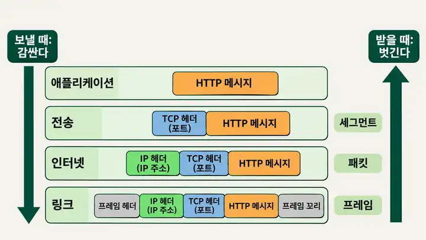
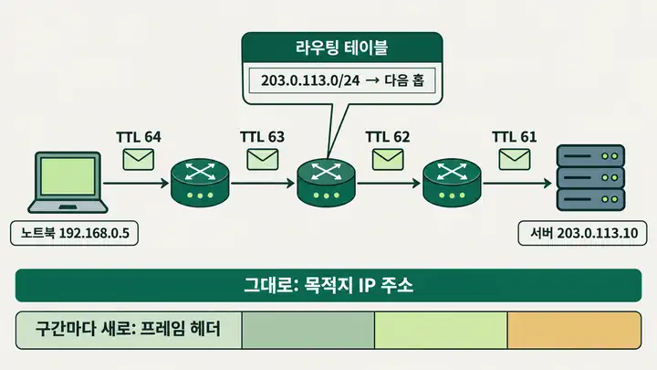
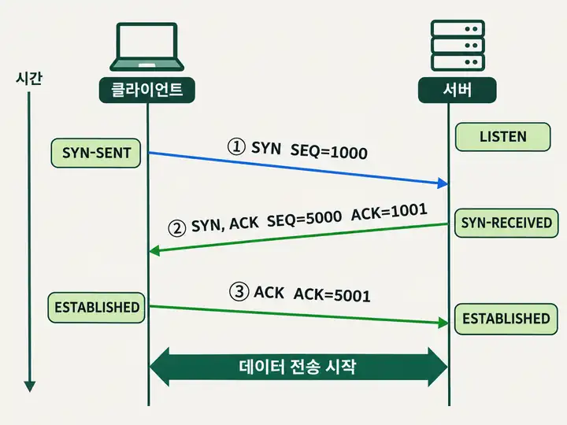
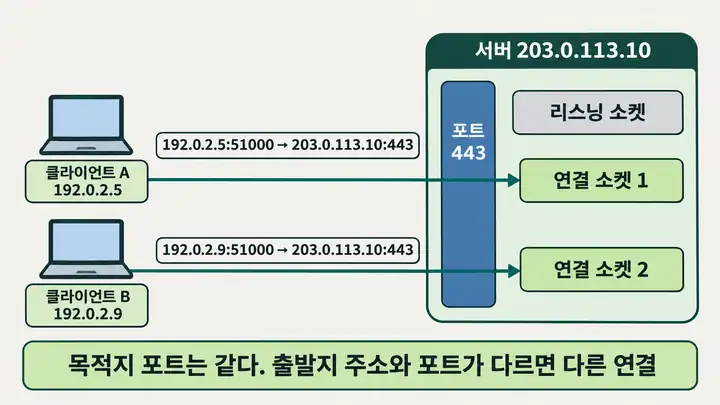
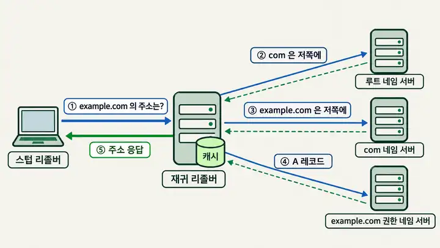

HTTP 웹 기본 지식 / 01회
인터넷 네트워크
주소창의 요청 하나가 IP 패킷으로 나뉘어 라우터를 건너고, TCP가 유실과 순서를 바로잡고, 포트와 DNS가 상대를 찾아 주는 과정을 RFC와 소켓 실험으로 추적한다.
오늘 끝나면 할 수 있는 것
- IP 패킷 헤더의 출발지·목적지 주소, TTL, Protocol 필드가 라우터와 수신 호스트에서 어떻게 쓰이는지 설명하고, IP가 약속하지 않는 것 네 가지를 근거와 함께 말할 수 있다.
- TCP 3-way handshake를 순서 번호와 상태 전이로 그리고, 왜 세 번인지와 "연결"의 실체가 양쪽 커널이 가진 기록이라는 점을 실험 결과로 설명할 수 있다.
- TCP가 바이트 스트림이고 UDP가 데이터그램이라는 차이가
read와receive의 결과에 어떻게 나타나는지 예측하고, 유실된 세그먼트가 재전송으로 메워지는 과정을 번호로 추적할 수 있다. - 서버 포트 하나에 여러 연결이 동시에 붙는 이유를 소켓 쌍으로 설명하고,
Connection refused, 연결 시간 초과,Connection reset,Address already in use가 각각 어떤 패킷 수준의 사건인지 구분할 수 있다. - 도메인 이름이 IP 주소가 되기까지 스텁 리졸버, 재귀 리졸버, 루트·TLD·권한 네임 서버가 주고받는 질의를 순서대로 말하고, TTL과 여러 층의 캐시가 주소 변경에 미치는 영향을 판단할 수 있다.
핵심 강의 → 핵심 요약 → 실무 재판단 → 적용 연습 → 이해 확인
01 핵심 강의
이 강의의 차례 · 소제목 14개
- 이 회차의 질문: 두 프로세스 사이에는 전용선이 없다
- 계층과 캡슐화: 데이터 한 조각에 봉투가 네 겹
- IP ①: 주소와 패킷 헤더
- IP ②: 라우터는 패킷을 한 홉씩 넘긴다
- IP가 약속하지 않는 것들
- TCP ①: 세그먼트 헤더, 3-way handshake, 연결의 정체
- TCP ②: 번호와 확인 응답으로 유실과 순서를 바로잡는다
- TCP ③: 연결을 닫는 두 가지 방법
- UDP: IP에 포트와 체크섬만 얹는다
- PORT: 같은 호스트 안에서 프로세스를 찾는다
- 소켓 오류 메시지를 패킷 수준의 사건으로 읽는다
- DNS: 이름을 주소로 바꾸는 분산 데이터베이스
- 흔한 오해 일곱 가지
- 이 지식이 다시 쓰이는 곳
이 회차의 질문: 두 프로세스 사이에는 전용선이 없다
스프링 입문에서 내장 톰캣이 8080번 포트를 열고, 브라우저 주소창에 localhost:8080을 넣으면 응답이 돌아오는 것을 보았다. 그때 브라우저와 서버는 같은 컴퓨터 안에 있었다. 실제 서비스에서는 브라우저가 서울의 노트북에서, 서버가 다른 대륙의 데이터센터에서 돈다. 두 컴퓨터를 직접 잇는 선은 없다. 노트북은 공유기에, 공유기는 통신사 장비에, 그 장비는 다시 다른 통신사의 장비에 이어져 있고, 그런 연결을 여러 번 건넌 끝에 서버가 있다.
이 상황에서 "요청을 보낸다"는 말은 네 가지 질문을 숨기고 있다.
- 보낸 데이터는 중간 장비들 가운데 누구를 거쳐 가는가. 그 장비들은 무엇을 보고 다음 장비를 고르는가.
- 가는 도중에 데이터 일부가 사라지거나 순서가 뒤바뀌면 누가 알아채고 누가 고치는가.
- 목적지 컴퓨터에는 프로그램이 여럿 돌고 있다. 도착한 데이터는 그중 어느 프로세스에 전달되는가.
- 사람은
example.com같은 이름을 입력한다. 장비들이 이해하는 숫자 주소는 누가 어떻게 알아내는가.
네 질문의 답이 차례로 IP, TCP와 UDP, 포트(port), DNS다. 이 권의 나머지 회차가 다루는 HTTP는 이 네 가지가 이미 해결되었다고 가정하고, 그 위에서 무엇을 주고받을지만 정한다. 그래서 HTTP를 쓰다가 만나는 여러 성질, 예를 들어 연결을 재사용하는 이유, 타임아웃을 반드시 걸어야 하는 이유, 응답을 못 받은 요청을 함부로 다시 보내면 안 되는 이유는 모두 이 아래 계층의 동작에서 나온다. 이 회차는 HTTP 메시지를 한 줄도 다루지 않고 그 아래만 본다.
회선을 잡아 두지 않고, 쪼개서 주소를 붙여 보낸다
멀리 있는 두 지점을 잇는 방법은 크게 둘이다. 하나는 통신하는 동안 두 지점 사이의 경로를 통째로 잡아 두는 회선 교환(circuit switching)이다. 경로가 정해지면 그 통로는 둘만 쓰므로 데이터는 보낸 순서 그대로 도착한다. 대신 아무것도 오가지 않는 동안에도 통로는 점유된 채로 남는다. 다른 하나는 데이터를 작은 조각으로 나누고 조각마다 목적지 주소를 적어 내보내는 패킷 교환(packet switching)이다. 중간 장비는 조각 하나를 받을 때마다 주소를 읽고 다음 장비로 넘긴다. 통로를 미리 잡지 않으므로 같은 회선을 수많은 통신이 나눠 쓸 수 있고, 중간 장비 하나가 고장 나도 조각들은 다른 길로 돌아갈 수 있다.
인터넷은 패킷 교환망이다. 인터넷 프로토콜을 정의한 RFC 791은 첫 문장에서 이 프로토콜이 패킷 교환 방식의 컴퓨터 통신망들을 서로 이은 시스템에서 쓰이도록 설계되었다고 밝힌다. 이 선택의 대가는 분명하다. 조각들이 서로 독립적으로 움직이므로 어떤 조각은 도중에 사라지고, 어떤 조각은 자기보다 늦게 출발한 조각보다 나중에 도착한다. 이 회차 전체가 그 대가를 누가 어떻게 치르는가에 관한 이야기다.
계층과 캡슐화: 데이터 한 조각에 봉투가 네 겹
네 질문을 프로그램 하나가 한꺼번에 풀려고 하면 감당할 수 없다. 인터넷은 문제를 층으로 나눈다. 인터넷 호스트가 갖춰야 할 요구 사항을 정리한 RFC 1122는 인터넷 프로토콜 모음을 애플리케이션 계층(application layer), 전송 계층(transport layer), 인터넷 계층(internet layer), 링크 계층(link layer)의 넷으로 설명한다. 각 계층은 바로 아래 계층이 해 주는 일만 믿고 쓰며, 그 아래가 어떻게 생겼는지는 알지 못한다.
| 계층 | 주고받는 단위 | 상대를 가리키는 것 | 책임지는 범위 | 구현되는 곳 |
|---|---|---|---|---|
| 애플리케이션 | 메시지(HTTP 요청·응답, DNS 질의) | 도메인 이름, URI | 무엇을 주고받을지 | 브라우저, 톰캣, 우리가 만든 프로그램 |
| 전송 | TCP 세그먼트, UDP 데이터그램 | 포트 번호 | 프로세스에서 프로세스까지 | 운영체제 커널 |
| 인터넷 | IP 패킷 | IP 주소 | 호스트에서 호스트까지, 여러 네트워크를 건너서 | 운영체제 커널, 라우터 |
| 링크 | 프레임 | 하드웨어 주소(이더넷은 48비트) | 직접 이어진 한 구간 | 네트워크 카드와 드라이버 |
보내는 쪽에서 데이터는 위에서 아래로 내려가고, 계층을 하나 지날 때마다 그 계층의 헤더(header)가 앞에 붙는다. 편지를 봉투에 넣고, 그 봉투를 다시 더 큰 봉투에 넣는 것과 같다. 이를 캡슐화(encapsulation)라 한다.
애플리케이션이 쓴 것 [ HTTP 메시지 ] 전송 계층(TCP)이 감싼 것 [ TCP 헤더 | HTTP 메시지 ] ← 세그먼트 인터넷 계층(IP)이 감싼 것 [ IP 헤더 | TCP 헤더 | HTTP 메시지 ] ← 패킷 링크 계층이 감싼 것 [ 프레임 헤더 | IP 헤더 | TCP 헤더 | HTTP 메시지 | 프레임 꼬리 ] ← 프레임 받는 쪽은 바깥 봉투부터 벗긴다: 프레임 → 패킷 → 세그먼트 → 메시지
이름을 정리해 둔다. RFC는 TCP가 주고받는 단위를 세그먼트(segment), IP가 나르는 단위를 데이터그램(datagram)이라 부른다. IP 데이터그램은 흔히 패킷(packet)이라고 하므로 이 글에서는 "IP 패킷"이라 쓴다. 링크 계층의 단위는 프레임(frame)이다. 이름이 다른 것은 계층마다 다른 헤더가 붙은 다른 덩어리이기 때문이다.
받는 쪽은 반대로 바깥 봉투부터 벗기는데, 각 헤더에는 "이 안에 든 것이 무엇인가"를 가리키는 칸이 하나씩 있다. 이더넷 프레임의 타입 필드가 16진수 0800이면 안에 IP 패킷이 들었다는 뜻이다(RFC 894). IP 헤더의 Protocol 필드가 6이면 TCP, 17이면 UDP다. TCP 헤더의 목적지 포트는 그 데이터를 받을 프로세스를 가리킨다. 수신은 봉투를 한 겹 벗길 때마다 다음 담당자를 찾아가는 과정이다.
크기도 한 번 짚어 둔다. 이더넷 한 프레임에 실을 수 있는 IP 패킷은 최대 1,500바이트다(RFC 894). 옵션이 없는 IP 헤더가 20바이트, 옵션이 없는 TCP 헤더가 20바이트이므로 패킷 하나가 나르는 애플리케이션 데이터는 많아야 1,460바이트다. 10만 바이트짜리 HTML 응답 하나는 이 기준으로 69개의 세그먼트로 나뉘어 간다. 우리가 "응답 하나"라고 부르는 것은 네트워크에서는 독립적으로 움직이는 수십 개의 패킷이다.
애플리케이션과 커널의 경계가 소켓이다
리눅스, macOS, 윈도우 같은 범용 운영체제에서 전송 계층과 인터넷 계층은 커널 안에 구현되어 있다. 자바 프로그램이 Socket의 출력 스트림에 바이트를 쓰면, 그 바이트는 시스템 콜을 거쳐 커널의 송신 버퍼로 복사된다. 거기서부터 바이트를 세그먼트로 자르고, 헤더를 붙이고, 응답이 없으면 다시 보내는 일은 모두 커널이 한다. 톰캣도 브라우저도 TCP 헤더를 직접 만들지 않는다.
애플리케이션과 커널 사이의 이 경계가 소켓(socket) API다. 애플리케이션이 보는 것은 "바이트를 쓰면 상대가 읽는다"는 단순한 통로뿐이고, 그 아래의 세그먼트와 패킷은 보이지 않는다. 이 회차의 실험은 모두 이 경계에서 한다. 소켓에 무언가를 시킨 뒤 커널이 실제로 한 일을 결과와 오류 메시지로 읽어 낸다.

IP ①: 주소와 패킷 헤더
인터넷 계층의 일은 하나다. 출발지 호스트에서 목적지 호스트까지, 서로 다른 네트워크를 여러 개 건너 패킷을 전달한다. 이를 위해 인터넷 프로토콜(Internet Protocol, IP)은 두 가지를 정한다. 호스트를 가리키는 주소 체계와, 패킷 앞에 붙는 헤더의 형식이다.
IP 주소는 "네트워크의 어디"를 뜻한다
IPv4 주소는 32비트 숫자다. 사람이 읽기 쉽게 8비트씩 네 덩어리로 나누고, 각각을 10진수로 써서 점으로 잇는다. 203.0.113.10이라는 표기는 실제로는 다음 32비트다.
203 . 0 . 113 . 10 11001011 00000000 01110001 00001010 ← 헤더에 실제로 들어가는 32비트 └──────── 네트워크 부분 (앞 24비트) ────────┘ └ 호스트 ┘ 203.0.113.0/24 에 속한 주소
32비트로 표현할 수 있는 주소는 2의 32제곱, 약 43억 개다. 이 수가 모자라 주소를 128비트로 늘린 것이 IPv6다(RFC 8200). 이 회차는 IPv4로 설명하지만 라우팅의 원리와 그 위에 얹히는 TCP, UDP의 동작은 IPv6에서도 같다.
주소는 아무렇게나 매긴 일련번호가 아니다. 앞부분은 네트워크를, 뒷부분은 그 네트워크 안의 호스트를 가리킨다. 어디까지가 네트워크 부분인지는 주소 뒤에 빗금과 숫자를 붙여 적는다. 203.0.113.0/24는 앞 24비트가 네트워크 부분이라는 뜻이고, 이 앞부분을 프리픽스(prefix)라 한다(RFC 4632). 같은 네트워크에 속한 호스트들은 프리픽스가 같다. 이 구조 덕분에 라우터는 호스트 하나하나가 아니라 프리픽스 단위로 길을 기억한다.
여기서 중요한 성질 하나가 나온다. IP 주소는 "누구인가"가 아니라 "네트워크의 어디에 붙어 있는가"를 나타낸다. 서버를 다른 데이터센터로 옮기면 붙는 네트워크가 달라지므로 주소도 바뀐다. 바뀔 수 있는 숫자를 사용자에게 외우게 할 수는 없다. 이 문제는 뒤에서 DNS가 맡는다.
자주 보게 될 특별한 주소 세 가지를 적어 둔다.
- 사설 주소(private address). RFC 1918은
10.0.0.0/8,172.16.0.0/12,192.168.0.0/16세 대역을 조직 내부용으로 떼어 두었다. 이 주소는 인터넷 전체에서는 의미가 없고, 바깥의 라우터는 이 대역에 대한 경로 정보를 걸러 내도록 되어 있다. 집 공유기 아래의 노트북이192.168.x.x주소를 받는 이유다. 바깥과 통신할 때는 공유기가 주소를 바꿔 준다. 이 주소 변환은 포트를 설명할 때 다시 나온다. - 루프백(loopback) 주소.
127로 시작하는 주소는 자기 자신을 가리킨다. RFC 1122는 이 주소가 호스트 밖에 나타나서는 안 된다고 정한다.127.0.0.1로 보낸 패킷은 네트워크 카드 밖으로 나가지 않지만, 커널의 TCP와 IP 처리는 똑같이 거친다. 그래서 컴퓨터 한 대로도 이 회차의 실험을 할 수 있다. - 문서용 주소. 이 글의 예시에 나오는
192.0.2.x,203.0.113.x는 RFC 5737이 문서에 쓰라고 떼어 둔 대역이다. 공개 인터넷에는 나타나지 않게 되어 있어 실제 서버와 겹칠 일이 없다.
패킷 헤더에 들어 있는 것과 없는 것
RFC 791이 정한 IPv4 헤더의 주요 필드는 다음과 같다. Type of Service처럼 이 회차의 흐름에 필요하지 않은 필드는 뺐다.
| 필드 | 크기 | 뜻 |
|---|---|---|
| Version | 4비트 | IP 버전. IPv4는 4 |
| IHL | 4비트 | 헤더 길이를 32비트 워드 수로 적는다. 최솟값이 5이므로 헤더는 최소 20바이트다 |
| Total Length | 16비트 | 헤더와 데이터를 합친 패킷 전체 길이. 16비트이므로 최대 65,535바이트 |
| Identification, Flags, Fragment Offset | 16, 3, 13비트 | 패킷이 더 작은 조각으로 나뉘었을 때 다시 맞추는 데 쓴다 |
| Time to Live | 8비트 | 남은 수명. 패킷을 처리하는 장비마다 줄이고, 0이 되면 버린다 |
| Protocol | 8비트 | 데이터 부분에 든 상위 프로토콜. 6은 TCP, 17은 UDP |
| Header Checksum | 16비트 | 헤더가 깨지지 않았는지 검사하는 값. 데이터 부분은 검사하지 않는다 |
| Source Address | 32비트 | 출발지 IP 주소 |
| Destination Address | 32비트 | 목적지 IP 주소 |
패킷마다 출발지와 목적지 주소가 통째로 들어 있다는 점이 핵심이다. 패킷은 그 자체로 완결된 배달 단위여서, 라우터는 그 패킷이 어떤 대화의 몇 번째 조각인지 몰라도 전달할 수 있다. RFC 791은 IP가 각 데이터그램을 다른 데이터그램과 관계없는 독립된 개체로 다룬다고 적는다.
헤더에 없는 것도 눈여겨보자. 포트 번호가 없다. 이 패킷이 전체 데이터의 몇 번째인지 알려 주는 순서 번호가 없다. 잘 받았다고 알려 줄 칸도 없다. 이 빈자리가 곧 IP의 한계이고, 전송 계층이 채워야 할 몫이다.
IP ②: 라우터는 패킷을 한 홉씩 넘긴다
패킷을 만든 호스트가 처음 하는 판단은 단순하다. 목적지 주소가 자신과 같은 프리픽스에 속하면 같은 네트워크에 있으므로 링크 계층으로 직접 건넨다. 그렇지 않으면 바깥으로 나가는 문 역할을 하는 라우터(router)에게 보낸다. 집에서는 공유기가 그 라우터다. 이 뒤로 패킷의 운명은 라우터들에게 달려 있다.
라우터는 여러 네트워크에 동시에 발을 걸친 장비이고, "어떤 프리픽스로 가는 패킷은 다음에 누구에게 넘긴다"는 표를 갖고 있다. 이 표가 라우팅 테이블(routing table)이다. 목적지 주소에 맞는 줄이 여럿이면 프리픽스가 가장 긴, 곧 가장 구체적인 줄을 고른다. RFC 4632는 인터넷의 전달이 최장 일치(longest match) 기준으로 이루어진다고 적는다.
어떤 라우터의 라우팅 테이블 (예시) 목적지 프리픽스 다음 홉 203.0.113.0/24 → 라우터 C 203.0.0.0/16 → 라우터 D 0.0.0.0/0 → 라우터 E (기본 경로: 길이 0인 프리픽스는 모든 주소와 일치한다) 목적지 203.0.113.10 → 세 줄 모두 일치. 가장 긴 /24를 골라 라우터 C로 목적지 203.0.50.1 → /16과 /0이 일치. /16을 골라 라우터 D로 목적지 198.51.100.7 → /0만 일치. 라우터 E로
- 프레임을 벗긴다들어온 프레임에서 링크 계층 헤더를 떼어 IP 패킷을 꺼낸다. 전송 계층 헤더와 그 안의 데이터는 열어 볼 필요가 없다.
- 목적지 주소로 다음 홉을 찾는다IP 헤더의 Destination Address를 라우팅 테이블과 맞춰 보고 가장 긴 프리픽스가 일치하는 줄을 고른다.
- TTL을 줄인다Time to Live를 줄이고, 0이 되면 패킷을 버린다. 헤더가 바뀌었으므로 헤더 체크섬을 다시 계산한다.
- 새 프레임에 담아 내보낸다다음 홉으로 이어지는 링크에 맞는 프레임 헤더를 새로 붙여 보낸다. 다음 라우터가 같은 일을 반복한다.
이 과정에서 전체 경로를 아는 장비는 하나도 없다. 각 라우터는 자기 다음 한 걸음만 안다. 이 한 걸음을 홉(hop)이라 한다. 패킷은 홉을 거듭해 목적지 네트워크에 붙은 마지막 라우터에 이르고, 그 라우터가 목적지 호스트에 직접 건넨다.
노트북 ────▶ 공유기 ────▶ 통신사 라우터 ────▶ ... ────▶ 데이터센터 라우터 ────▶ 서버 TTL=64 63으로 62로 도착 홉마다 그대로인 것 : IP 헤더의 출발지 주소와 목적지 주소 (주소 변환 장비를 지나는 경우는 예외) 홉마다 바뀌는 것 : TTL, 헤더 체크섬, 그리고 바깥의 프레임 헤더 전체
TTL(Time to Live)은 길을 잃은 패킷이 영원히 떠도는 것을 막는 장치다. 라우팅 테이블이 잘못되어 두 라우터가 서로에게 패킷을 떠넘기는 고리가 생기더라도, RFC 791에 따라 패킷을 처리하는 모듈마다 TTL을 적어도 1씩 줄이고 0이 되면 패킷을 없애므로 언젠가는 사라진다. 리눅스가 스스로 만드는 패킷의 TTL 초기값은 기본 64다. TTL이 0이 되어 패킷을 버린 라우터는 출발지에 "시간 초과" ICMP 메시지를 보낼 수 있다(RFC 792).
이 동작을 거꾸로 이용한 도구가 traceroute다. macOS의 매뉴얼에 따르면 이 프로그램은 TTL을 1로 한 탐사 패킷부터 시작해 TTL을 하나씩 늘려 가며 보내고, 각 단계에서 돌아오는 ICMP 시간 초과 메시지의 발신 주소를 읽는다. TTL이 1인 패킷은 첫 라우터에서 죽고, 2인 패킷은 둘째 라우터에서 죽으므로, 경로의 라우터들이 차례로 자기 주소를 알려 주게 된다.
링크마다 한 번에 실을 수 있는 크기가 다르다
링크 계층마다 프레임 하나에 담을 수 있는 최대 크기가 있다. 이를 MTU(Maximum Transmission Unit)라 하고, 이더넷은 IP 패킷 기준 1,500바이트다. 패킷이 다음 링크의 MTU보다 크면 IPv4에서는 도중의 라우터가 패킷을 더 작은 조각으로 나눌 수 있고, 이를 단편화(fragmentation)라 한다. 나뉜 조각은 저마다 IP 헤더를 가진 독립된 패킷으로 여행하며, 다시 합치는 일은 목적지 호스트가 한다. 헤더의 Don't Fragment 플래그가 켜져 있으면 라우터는 나누지 않고 패킷을 버린다. IPv6에서는 단편화를 출발지만 할 수 있고 도중의 라우터는 하지 않는다(RFC 8200).
조각 하나만 사라져도 원래 패킷 전체를 쓸 수 없게 되므로 단편화는 피하는 편이 낫다. 그래서 TCP는 연결을 맺을 때 한 세그먼트에 실을 데이터의 최대 크기(Maximum Segment Size, MSS)를 서로 알려 주고, 처음부터 그보다 작게 잘라 보낸다. 앞에서 계산한 1,460바이트가 이더넷 환경에서 흔히 보는 MSS 값이다. 상대가 MSS를 알려 주지 않으면 IPv4에서는 536바이트로 가정해야 한다(RFC 9293).

IP가 약속하지 않는 것들
IP는 패킷을 목적지 쪽으로 보내려고 애쓸 뿐, 결과를 보장하지 않는다. RFC 791은 이 점을 숨기지 않는다. 종단 간 신뢰성, 흐름 제어, 순서 맞춤 같은 기능을 보태는 장치가 IP에는 없고, 종단 간에도 홉 사이에도 확인 응답이 없다고 직접 적는다. RFC 1122의 표현은 더 구체적이어서, IP 데이터그램은 목적지에 손상된 채로, 중복되어, 순서가 바뀌어 도착할 수 있고 아예 도착하지 않을 수도 있다고 한다. 이를 최선형 전달(best-effort delivery)이라 부른다. 구체적으로는 네 가지 문제가 남는다.
- 상대의 상태를 모른다(비연결성). IP에는 연결이라는 개념이 없다. 목적지 호스트가 꺼져 있어도, 그런 주소가 없어도 패킷은 일단 떠난다. 보낸 쪽은 패킷이 도착했는지, 받을 상대가 있기는 한지 알 길이 없다.
- 패킷이 사라진다(유실). 라우터에 패킷이 처리할 수 있는 것보다 많이 몰리면 넘치는 패킷은 버려진다. TTL이 다해도, 전송 중에 헤더가 깨져도 버려진다. 버린 장비가 출발지에 알려 준다는 보장은 없다.
- 순서가 바뀐다. 패킷마다 독립적으로 길을 찾으므로 도착 순서가 보낸 순서와 같다는 보장이 없다. 1,460바이트씩 잘라 보낸 HTML의 뒷부분이 앞부분보다 먼저 도착할 수 있다.
- 프로세스를 구분하지 못한다. IP 주소는 호스트까지만 가리킨다. 그 호스트에서 브라우저, 메신저, 음악 재생기가 동시에 통신하고 있을 때, 도착한 패킷을 누구에게 줄지 IP 헤더만으로는 정할 수 없다.
이렇게 설계한 데에는 이유가 있다. 라우터가 패킷마다 "이 패킷은 어느 대화의 몇 번째이고 상대가 받았는지"를 기억해야 한다면, 수많은 통신이 지나가는 라우터는 그 기억을 감당할 수 없고, 라우터 하나가 죽으면 그 기억도 함께 사라진다. RFC 1122는 종단 간 흐름 제어와 신뢰성에 필요한 상태 정보를 모두 호스트에 둔다고 설명한다. 가운데는 단순하게 두고 복잡한 일은 양쪽 끝이 맡는다는 것이 인터넷 설계의 기본 방침이다.
TCP ①: 세그먼트 헤더, 3-way handshake, 연결의 정체
전송 제어 프로토콜(Transmission Control Protocol, TCP)은 IP가 남긴 네 문제를 모두 떠맡는다. 현행 명세인 RFC 9293은 TCP가 애플리케이션에 제공하는 것을 신뢰할 수 있고(reliable), 순서가 지켜지는(in-order), 바이트 스트림(byte-stream) 서비스라고 요약한다. 믿을 수 없는 패킷 배달 위에 이 세 가지를 세우기 위해 TCP는 IP 패킷의 데이터 자리에 자신의 헤더를 넣는다.
| 필드 | 크기 | 뜻 |
|---|---|---|
| Source Port, Destination Port | 각 16비트 | 보내는 프로세스와 받는 프로세스를 가리키는 포트 번호 |
| Sequence Number | 32비트 | 이 세그먼트에 실린 데이터의 첫 바이트가 전체 흐름에서 몇 번인지 |
| Acknowledgment Number | 32비트 | 상대에게서 다음에 받기를 기대하는 바이트의 번호. 그 앞까지는 모두 받았다는 뜻 |
| Data Offset | 4비트 | 헤더 길이(32비트 워드 수). 옵션이 없으면 5, 곧 20바이트 |
| 제어 비트 | 8비트 | CWR, ECE, URG, ACK, PSH, RST, SYN, FIN. 이 회차에서는 SYN, ACK, FIN, RST를 본다 |
| Window | 16비트 | 이 세그먼트를 보낸 쪽이 지금 더 받을 수 있는 바이트 수 |
| Checksum | 16비트 | 세그먼트가 깨지지 않았는지 검사하는 값 |
| Options | 가변 | MSS 통지 같은 부가 정보 |
헤더의 칸은 네 묶음으로 읽으면 된다. 포트는 "어느 프로세스인가"에, 순서 번호와 확인 번호는 "어디까지 보냈고 어디까지 받았는가"에, 제어 비트는 "연결을 맺고 끊는 절차"에, 윈도우는 "얼마나 더 보내도 되는가"에 답한다. IP 헤더에 없던 것들이 여기에 모여 있다.
순서 번호는 세그먼트가 아니라 바이트에 매긴다는 점을 기억해 두자. TCP는 애플리케이션이 쓴 데이터를 긴 바이트의 줄로 보고 바이트마다 번호를 붙인다. 번호 공간은 0부터 2의 32제곱 빼기 1까지이고 끝에 이르면 0으로 돌아온다. 세그먼트의 Sequence Number는 그 세그먼트가 실은 첫 바이트의 번호다.
3-way handshake: 양쪽이 시작 번호를 맞춘다
바이트에 번호를 붙여 주고받으려면 먼저 "내 번호는 몇 번부터 시작한다"를 서로 알려야 한다. 이 시작 번호를 초기 순서 번호(Initial Sequence Number, ISN)라 하고, 양쪽이 ISN을 주고받아 확인하는 절차가 3-way handshake다. 연결을 먼저 거는 쪽을 능동 열기(active open), 기다리는 쪽을 수동 열기(passive open)라 한다. 아래 그림의 번호는 설명을 위해 고른 값이다.
클라이언트 (능동 열기) 서버 (수동 열기)
상태: CLOSED 상태: LISTEN
│ ① SYN SEQ=1000 │
│ ─────────────────────────────────────────────────────────────▶ │
SYN-SENT SYN-RECEIVED
│ ② SYN, ACK SEQ=5000 ACK=1001 │
│ ◀───────────────────────────────────────────────────────────── │
ESTABLISHED
│ ③ ACK SEQ=1001 ACK=5001 │
│ ─────────────────────────────────────────────────────────────▶ │
ESTABLISHED
│ ④ ACK + 데이터 300바이트 SEQ=1001 ACK=5001 │
│ ─────────────────────────────────────────────────────────────▶ │
│ ⑤ ACK SEQ=5001 ACK=1301 │
│ ◀───────────────────────────────────────────────────────────── │
- 클라이언트가 SYN 비트를 켠 세그먼트를 보낸다. "내 번호는 1000에서 시작한다"는 뜻이다. 데이터는 없다.
- 서버는 SYN과 ACK를 함께 켠 세그먼트로 답한다. ACK=1001은 "1000번까지 받았고 다음은 1001번을 기대한다"는 뜻이다. 데이터가 없는데도 번호가 하나 올라간 것은 SYN 자체가 순서 번호 하나를 차지하기 때문이다. 동시에 SEQ=5000으로 자신의 시작 번호를 알린다.
- 클라이언트가 ACK=5001로 서버의 시작 번호를 확인한다. 이 세그먼트를 보내며 클라이언트는 ESTABLISHED가 되고, 서버는 이것을 받으며 ESTABLISHED가 된다.
- 이제 데이터가 오간다. 클라이언트가 300바이트를 보내면 그 바이트들의 번호는 1001번부터 1300번이다.
- 서버의 ACK=1301은 "1300번까지 빠짐없이 받았다"는 뜻이다.
연결 하나를 맺는 데 왕복 한 번이 든다. ③의 ACK는 답을 기다릴 필요가 없으므로 클라이언트는 곧바로 ④의 데이터를 보낼 수 있다. 그래도 첫 데이터를 보내기 전에 ①과 ②가 오가는 시간은 반드시 지나야 한다. 서버가 지구 반대편에 있으면 이 왕복만으로도 체감되는 시간이 든다. 연결을 한 번 맺으면 되도록 오래 다시 쓰려는 HTTP의 여러 장치와 데이터베이스 커넥션 풀은 이 비용을 아끼려는 것이다.
왜 두 번이 아니라 세 번인가
논리적으로 필요한 일은 넷이다. 클라이언트가 자기 ISN을 알린다. 서버가 그것을 확인한다. 서버가 자기 ISN을 알린다. 클라이언트가 그것을 확인한다. 이 가운데 둘째와 셋째는 같은 방향이므로 세그먼트 하나에 합칠 수 있고, 그래서 세 번이 된다. 마지막 확인을 빼고 두 번으로 줄이면 서버는 자신의 시작 번호가 상대에게 닿았는지 모르는 채로 데이터를 보내야 한다.
RFC 9293이 꼽는 가장 큰 이유는 따로 있다. 오래된 중복 연결 요청이 혼란을 일으키지 않게 하려는 것이다. 예전에 보낸 SYN이 네트워크 어딘가에서 지체되다가 뒤늦게 서버에 도착했다고 하자. 서버는 이것이 지금의 요청인지 과거의 유령인지 구별할 수 없으므로 일단 SYN, ACK로 답한다. 클라이언트는 자신이 보낸 적 없는 번호에 대한 확인을 받게 되고, 연결을 거절하는 RST 세그먼트로 답한다. 서버는 RST를 받고 그 시도를 버린다. 세 번째 단계가 없다면 서버는 유령 SYN 하나만으로 연결이 맺어졌다고 믿고 자원을 붙들게 된다.
ISN이 0이 아닌 것도 같은 걱정에서 나온다. 같은 두 포트 사이에 연결을 맺었다 끊고 곧바로 다시 맺으면, 이전 연결의 세그먼트가 뒤늦게 도착해 새 연결의 것으로 오인될 수 있다. RFC 9293은 약 4마이크로초마다 올라가는 시계 값에, 양쪽 주소와 포트 그리고 비밀 키로 계산한 값을 더해 ISN을 만들도록 권한다. 연결마다 번호 구간이 달라지고, 바깥에서 번호를 짐작하기도 어려워진다.

연결의 정체: 양쪽 커널이 가진 기록
handshake가 끝나면 "연결되었다"고 말하지만, 그 순간 두 호스트 사이에 통로가 생긴 것은 아니다. 중간의 라우터들은 여전히 패킷을 하나씩 독립적으로 넘길 뿐이고, 방금 무슨 약속이 맺어졌는지 알지 못한다. 달라진 것은 양쪽 끝뿐이다. 양쪽 커널이 이 연결에 대한 기록을 하나씩 만들었다. RFC 9293은 이 기록을 TCB(Transmission Control Block)라 부른다. 여기에는 상대의 주소와 포트, 내가 다음에 보낼 번호, 상대에게서 다음에 받을 번호, 윈도우 크기, 송수신 버퍼가 들어 있다. TCP 연결은 양 끝에 있는 이 두 기록이 서로 맞아떨어져 있는 상태를 가리키는 말이다.
이 일을 하는 주체가 애플리케이션이 아니라 커널이라는 것을 직접 확인해 보자. 아래 프로그램은 한 프로세스 안에서 리스닝 소켓을 만들고, 서버 쪽이 accept()를 부르기 전에 클라이언트 소켓 둘을 먼저 연결한다.
import java.net.ServerSocket;
import java.net.Socket;
public class FourTuple {
public static void main(String[] args) throws Exception {
try (ServerSocket server = new ServerSocket(12345)) { // 12345번 포트에 리스닝 소켓을 만든다
// 서버는 아직 accept()를 한 번도 호출하지 않았다.
Socket c1 = new Socket("127.0.0.1", 12345);
Socket c2 = new Socket("127.0.0.1", 12345);
System.out.println("c1 연결됨: " + c1.isConnected() + ", c2 연결됨: " + c2.isConnected());
Socket s1 = server.accept();
Socket s2 = server.accept();
print("클라이언트 c1", c1);
print("클라이언트 c2", c2);
print("서버 s1", s1);
print("서버 s2", s2);
Thread.sleep(3000); // 이 3초 동안 다른 터미널에서 netstat으로 커널의 소켓 목록을 본다
c1.close(); c2.close(); s1.close(); s2.close();
}
}
static void print(String name, Socket s) {
System.out.println(name + " | 내 쪽 " + s.getLocalAddress().getHostAddress() + ":" + s.getLocalPort()
+ " <-> 상대 쪽 " + s.getInetAddress().getHostAddress() + ":" + s.getPort());
}
}c1 연결됨: true, c2 연결됨: true
클라이언트 c1 | 내 쪽 127.0.0.1:55310 <-> 상대 쪽 127.0.0.1:12345
클라이언트 c2 | 내 쪽 127.0.0.1:55311 <-> 상대 쪽 127.0.0.1:12345
서버 s1 | 내 쪽 127.0.0.1:12345 <-> 상대 쪽 127.0.0.1:55310
서버 s2 | 내 쪽 127.0.0.1:12345 <-> 상대 쪽 127.0.0.1:55311첫 줄이 이 실험의 요점이다. new Socket(host, port)는 연결이 수립되어야 반환하는 생성자인데, 서버 코드가 accept()를 한 번도 부르지 않은 시점에 두 연결이 이미 수립되어 있다. SYN을 받고, SYN과 ACK로 답하고, 마지막 ACK를 받는 일은 리스닝 소켓이 만들어진 순간부터 커널이 알아서 한다. 수립이 끝난 연결은 커널 안의 대기열에 쌓이고, accept()는 그 대기열에서 하나를 꺼내 줄 뿐이다.
이 대기열에는 길이 제한이 있다. ServerSocket의 Javadoc에 따르면 길이를 따로 주지 않았을 때 대기열의 최대 길이는 50이고, 대기열이 가득 찼을 때 들어온 연결 요청은 거절된다. 생성자의 backlog 인자로 다른 값을 요청할 수 있지만 실제 길이는 운영체제가 정한다. 리눅스 커널 문서는 listen()의 backlog 상한인 somaxconn의 기본값을 4096으로 적고 있다. 애플리케이션이 accept()를 제때 부르지 못하면 연결은 맺어졌는데 처리는 시작되지 않은 채 쌓이고, 대기열이 넘치면 새 연결이 실패한다. 서버가 느려질 때 클라이언트 쪽에서 연결 오류가 먼저 보이는 이유 가운데 하나다.
연결이 기록일 뿐이라는 사실에서 실무적으로 중요한 결론이 하나 나온다. 한쪽 기록이 사라져도 다른 쪽은 그 사실을 저절로 알 수 없다. 데이터를 주고받지 않는 동안 서버의 전원이 나가거나 중간의 회선이 끊기면, 클라이언트의 커널에는 ESTABLISHED 상태의 기록이 그대로 남는다. 클라이언트가 응답을 기다리며 read에 멈춰 있다면 그 대기는 끝나지 않는다. TCP에 상대의 생존을 주기적으로 확인하는 keep-alive 기능이 있기는 하지만, RFC 9293은 이 기능이 기본으로 꺼져 있어야 하고 켜더라도 기본 간격이 2시간보다 짧아서는 안 된다고 정한다. 그러므로 상대가 죽었는지에 대한 판단은 애플리케이션이 타임아웃으로 직접 해야 한다.
TCP ②: 번호와 확인 응답으로 유실과 순서를 바로잡는다
handshake로 양쪽의 시작 번호가 맞춰졌다. 이제 TCP는 세 가지 규칙만으로 IP의 유실, 순서 뒤바뀜, 중복을 한꺼번에 처리한다. 첫째, 보낸 쪽은 상대가 받았다고 확인해 주기 전까지 보낸 바이트를 버리지 않고 갖고 있는다. 둘째, 받는 쪽은 "다음에 받기를 기대하는 번호"를 확인 번호로 알린다. ACK=2001은 2000번까지의 모든 바이트를 빠짐없이 받았다는 뜻이고, 이렇게 한 숫자가 그 앞 전부를 확인하므로 누적 확인 응답(cumulative acknowledgment)이라 부른다. 셋째, 확인이 오지 않은 바이트는 다시 보낸다. RFC 9293은 TCP가 모든 세그먼트의 전달을 보장하기 위해 재전송을 사용한다고 적는다.
세그먼트 하나가 사라지는 상황을 번호로 추적해 보자. 보내는 쪽이 1001번부터 6000번까지 5,000바이트를 1,000바이트씩 다섯 세그먼트로 나눠 보내는데, 두 번째 세그먼트 B가 도중에 버려진다.
보내는 쪽 받는 쪽 (처음 기대 번호: 1001) A SEQ=1001 (1001~2000) ─────────────────────────────▶ 받음. 기대 번호 2001 → ACK=2001 B SEQ=2001 (2001~3000) ───────────── ✕ 유실 C SEQ=3001 (3001~4000) ─────────────────────────────▶ 기대한 2001이 아니다. 보관 → ACK=2001 (중복 1) D SEQ=4001 (4001~5000) ─────────────────────────────▶ 보관 → ACK=2001 (중복 2) E SEQ=5001 (5001~6000) ─────────────────────────────▶ 보관 → ACK=2001 (중복 3) 같은 ACK가 세 번 더 왔다 → 타이머를 기다리지 않고 B를 다시 보낸다 B SEQ=2001 (2001~3000) ─────────────────────────────▶ 구멍이 메워졌다. 1001~6000 연속 → ACK=6001
- A가 도착한다. 받는 쪽이 기대하던 1001번과 일치하므로 받아들이고, 기대 번호를 2001로 올린 뒤 ACK=2001을 보낸다.
- B가 사라진다. 이 사실을 알려 주는 장비는 없다. 보낸 쪽도 받는 쪽도 아직 모른다.
- C가 도착한다. 시작 번호가 3001인데 기대 번호는 2001이다. 중간이 비었다는 뜻이다. RFC 9293은 시작 번호가 기대보다 큰 세그먼트를 나중에 처리하도록 보관하라고 권하고, 혼잡 제어를 정의한 RFC 5681은 순서가 어긋난 세그먼트가 도착하면 받는 쪽이 중복 ACK를 곧바로 보내라고 권한다. 그래서 받는 쪽은 C를 버퍼에 두고 ACK=2001을 한 번 더 보낸다. "아직 2001번을 기다리고 있다"는 말이다.
- D와 E도 같은 대접을 받는다. 보낸 쪽에는 ACK=2001이 세 번 더 도착한다.
- RFC 5681에 따르면 보낸 쪽은 중복 ACK 세 개가 도착한 것을 세그먼트가 유실되었다는 신호로 삼고, 재전송 타이머가 끝나기를 기다리지 않고 그 세그먼트를 다시 보낸다. 이를 빠른 재전송(fast retransmit)이라 한다.
- 다시 보낸 B가 도착하면 받는 쪽은 1001번부터 6000번까지를 끊김 없이 갖게 된다. 확인 번호는 3001이 아니라 단숨에 6001로 뛴다. 누적 확인이기 때문이다.
이 과정을 받는 쪽 애플리케이션의 눈으로 다시 보면 중요한 사실이 드러난다. A가 도착한 뒤 애플리케이션이 read로 꺼낼 수 있는 것은 1001번에서 2000번까지의 1,000바이트뿐이다. C, D, E는 이미 커널에 도착해 있지만 애플리케이션에 전달되지 않는다. TCP가 약속한 것이 "순서대로"이기 때문이다. B가 다시 도착하는 순간 4,000바이트가 한꺼번에 읽을 수 있게 된다. 패킷 하나의 유실이 그 뒤에 온 모든 데이터를 붙잡아 두는 셈이다. 이 성질은 한 연결에 여러 요청을 섞어 보내는 HTTP/2에서 문제가 되고, HTTP/3가 TCP를 떠난 이유가 된다. 그 이야기는 UDP를 설명할 때 한 번 더 나온다.
뒤따르는 세그먼트가 없으면 재전송 타이머가 맡는다
빠른 재전송은 뒤따라 도착한 세그먼트가 중복 ACK를 만들어 주어야 동작한다. 마지막 세그먼트 E가 사라졌다면 중복 ACK를 일으킬 세그먼트가 없다. 이때는 타이머가 유일한 수단이다. 보낸 쪽은 세그먼트를 보내며 재전송 타이머를 걸고, 확인이 오기 전에 타이머가 끝나면 다시 보낸다. 이 대기 시간을 RTO(Retransmission Timeout)라 한다.
RTO를 얼마로 잡을지는 RFC 6298이 정한다. 너무 짧으면 멀쩡히 가고 있는 세그먼트를 쓸데없이 다시 보내고, 너무 길면 유실을 늦게 알아챈다. 그래서 TCP는 세그먼트를 보내고 확인이 돌아오기까지의 왕복 시간(Round-Trip Time, RTT)을 계속 재서 RTO를 계산한다. 이 RFC의 규칙 가운데 기억해 둘 것은 네 가지다.
- 왕복 시간을 아직 한 번도 재지 못했을 때의 RTO는 1초로 둔다.
- 계산한 RTO가 1초보다 작으면 1초로 올려 잡도록 권한다.
- 타이머가 끝나 재전송할 때마다 RTO를 두 배로 늘린다. 연달아 실패하면 대기 시간이 1초, 2초, 4초, 8초로 벌어진다.
- RTO에 상한을 둘 수 있지만 그 상한은 60초 이상이어야 한다.
이것은 RFC의 규칙이고, 운영체제가 실제로 쓰는 하한과 상한은 구현마다 다르다. 어느 쪽이든 결론은 같다. 타이머로 복구되는 유실은 빠른 재전송으로 복구되는 유실보다 훨씬 비싸다. 응답 시간 그래프에서 대부분의 요청은 빠른데 일부만 유독 느린 꼬리가 보인다면, 그 가운데에는 이렇게 타이머를 기다린 요청이 섞여 있을 수 있다.
재전송이 계속 실패하면 TCP는 언젠가 포기한다. RFC 9293은 같은 세그먼트의 재전송이 임계값에 이르면 연결을 닫도록 하고, 그 임계값이 적어도 100초에 해당해야 한다고 권한다. 리눅스 커널 문서는 이 값을 정하는 tcp_retries2의 기본값이 15이고 이것이 계산상 924.6초의 타임아웃에 해당한다고 적는다. 상대가 사라진 뒤에도 커널은 15분 넘게 혼자 재전송을 되풀이한 다음에야 애플리케이션에 오류를 알린다는 뜻이다. 앞에서 본 것처럼 아무것도 보내지 않고 기다리기만 하는 쪽은 아예 알 수 없다. TCP가 스스로 장애를 알아채는 시간은 분 단위이고, 그보다 빨리 판단하고 싶으면 애플리케이션이 타임아웃을 걸어야 한다.
중복과 손상도 같은 번호로 처리한다
사라진 것이 데이터가 아니라 확인 응답일 수도 있다. 받는 쪽은 B를 잘 받았는데 ACK가 돌아오는 길에 버려지면, 보낸 쪽은 B가 유실되었다고 여기고 다시 보낸다. 받는 쪽에는 같은 바이트가 두 번 도착한다. RFC 9293은 네트워크나 재전송 때문에 중복 세그먼트가 도착할 수 있다고 적어 둔다. 받는 쪽은 세그먼트의 번호가 이미 받은 범위에 속한다는 것을 보고 버린 뒤 확인만 다시 보낸다. 애플리케이션은 같은 바이트를 두 번 읽지 않는다.
전송 중에 비트가 뒤집힌 세그먼트는 체크섬이 걸러 낸다. TCP 체크섬은 헤더와 데이터, 그리고 출발지·목적지 IP 주소를 담은 의사 헤더(pseudo-header)까지 포함해 계산한다. 값이 맞지 않는 세그먼트는 버려지고, 확인 응답이 가지 않으므로 결국 재전송된다. 손상은 유실로 바뀌고 유실은 재전송으로 메워진다. 순서 번호 하나로 유실, 순서 뒤바뀜, 중복이라는 IP의 세 가지 문제가 모두 풀린다.
흐름 제어: 받는 쪽이 감당할 만큼만 보낸다
도착한 바이트는 애플리케이션이 read로 가져가기 전까지 커널의 수신 버퍼에 머문다. 애플리케이션이 느리면 버퍼가 찬다. 보내는 쪽이 이를 모르고 계속 보내면 넘친 데이터는 버려지고 재전송만 늘어난다. 그래서 받는 쪽은 모든 세그먼트의 Window 필드에 "지금 더 받을 수 있는 바이트 수"를 적어 보내고, 보내는 쪽은 그 범위를 넘겨 보내지 않는다. 이것이 흐름 제어(flow control)다.
수신 버퍼가 가득 차면 윈도우는 0이 되고 보내는 쪽은 멈춘다. 버퍼가 비었다는 소식이 유실되면 양쪽이 영원히 기다릴 수 있으므로, RFC 9293은 윈도우가 0인 동안 보내는 쪽이 간격을 두고 상대를 다시 찔러 보는 동작(zero-window probe)을 반드시 지원하도록 한다. 애플리케이션에서 이 장치는 이렇게 드러난다. 상대가 읽지 않으면 내 쪽 커널의 송신 버퍼도 차고, 블로킹 소켓의 write는 버퍼에 자리가 날 때까지 반환하지 않는다. 응답을 느리게 읽는 클라이언트 하나가 서버의 스레드 하나를 write에 묶어 둘 수 있다는 뜻이다.
혼잡 제어: 네트워크가 감당할 만큼만 보낸다
받는 쪽의 윈도우는 그 사이에 있는 라우터들의 사정을 알려 주지 않는다. 모든 호스트가 상대의 윈도우만큼 한꺼번에 쏟아 내면 라우터의 대기열이 넘쳐 패킷이 버려지고, 재전송이 다시 대기열을 채운다. 이를 막는 것이 혼잡 제어(congestion control)다. RFC 5681은 보내는 쪽이 스스로 관리하는 혼잡 윈도우(congestion window, cwnd)를 정의하고, 보낼 수 있는 양을 혼잡 윈도우와 받는 쪽 윈도우 가운데 작은 쪽으로 제한한다.
혼잡 윈도우는 작게 시작해 반응을 보며 넓힌다. 느린 시작(slow start) 단계에서는 새 데이터에 대한 확인이 올 때마다 세그먼트 하나 크기까지 윈도우를 늘린다. 보낸 세그먼트마다 확인이 돌아온다면 왕복 한 번에 윈도우가 대략 두 배가 된다. 일정 수준을 넘으면 혼잡 회피(congestion avoidance) 단계로 들어가 왕복 한 번에 세그먼트 하나 정도씩만 늘린다. 재전송 타이머가 끝날 정도의 유실을 겪으면 윈도우를 세그먼트 하나 크기로 되돌린다. RFC 9293은 TCP 구현이 이 알고리즘들을 반드시 갖추도록 요구한다.
여기서 연결을 재사용해야 하는 두 번째 이유가 나온다. 갓 맺은 연결은 회선이 아무리 빨라도 작은 윈도우에서 출발한다. 이미 데이터를 주고받으며 윈도우를 키워 놓은 연결은 처음부터 빠르다. handshake의 왕복 한 번에 더해, 새 연결은 속도를 올리는 데에도 몇 번의 왕복을 쓴다.
TCP ③: 연결을 닫는 두 가지 방법
연결이 양쪽 커널의 기록이라면, 연결을 닫는다는 것은 그 기록을 양쪽에서 정리하는 일이다. 방법은 둘이다. 하나는 양쪽이 합의해 차례로 닫는 정상 종료이고, 다른 하나는 한쪽이 기록을 즉시 버리고 상대에게 통보하는 중단(abort)이다. 앞의 것은 FIN 비트를, 뒤의 것은 RST 비트를 쓴다.
FIN: "나는 더 보낼 것이 없다"
RFC 9293은 닫기 동작의 뜻을 "나는 더 보낼 데이터가 없다"로 정의한다. 더 받지 않겠다는 뜻이 아니다. TCP 연결의 두 방향은 따로 닫힌다. 아래 그림은 RFC 9293의 정상 종료 예시와 같은 번호를 쓴 것이다.
먼저 닫는 쪽 (능동 종료) 상대 (수동 종료)
ESTABLISHED ESTABLISHED
close() 호출
│ ① FIN, ACK SEQ=100 ACK=300 │
│ ─────────────────────────────────────────────────────────────▶ │
FIN-WAIT-1 CLOSE-WAIT (이쪽의 read가 -1을 돌려준다)
│ ② ACK SEQ=300 ACK=101 │
│ ◀───────────────────────────────────────────────────────────── │
FIN-WAIT-2 (남은 데이터가 있으면 마저 보낼 수 있다)
close() 호출
│ ③ FIN, ACK SEQ=300 ACK=101 │
│ ◀───────────────────────────────────────────────────────────── │
TIME-WAIT LAST-ACK
│ ④ ACK SEQ=101 ACK=301 │
│ ─────────────────────────────────────────────────────────────▶ │
(MSL의 두 배만큼 기다린 뒤) CLOSED
CLOSED
세그먼트가 네 개 오가므로 흔히 4-way handshake라 부른다. ①의 FIN에 대한 확인 번호가 100이 아니라 101인 것은 SYN과 마찬가지로 FIN도 순서 번호 하나를 차지하기 때문이다. FIN도 유실되면 재전송되어야 하므로 번호가 필요하다. 상대의 FIN이 도착했다는 사실은 애플리케이션에 스트림의 끝으로 전달된다. 자바에서는 InputStream.read가 -1을 돌려준다.
②와 ③ 사이에는 한쪽 방향만 닫힌 상태가 있다. 먼저 닫은 쪽은 더 보내지 않지만 계속 받을 수 있고, 상대는 남은 데이터를 마저 보낼 수 있다. 자바의 Socket.shutdownOutput()이 이 상태를 만든다. Javadoc에 따르면 이 메서드는 앞서 쓴 데이터를 모두 보낸 뒤 TCP의 정상 종료 절차를 시작하며, 입력 스트림은 그대로 남는다. "요청은 여기까지이고 이제 응답을 끝까지 읽겠다"를 표현할 때 쓴다.
TIME-WAIT: 먼저 닫은 쪽이 기록을 잠시 더 들고 있는 이유
그림에서 먼저 닫은 쪽은 마지막 ACK를 보낸 뒤 곧바로 CLOSED가 되지 않고 TIME-WAIT 상태에 머문다. RFC 9293은 연결을 능동적으로 닫은 쪽이 MSL(Maximum Segment Lifetime)의 두 배 동안 이 상태에 머물러야 한다고 정하고, MSL을 2분으로 잡는다. 명세대로라면 4분이다. 실제 운영체제는 더 짧은 값을 쓰기도 한다. 이 글의 실험에 쓴 macOS에서 sysctl net.inet.tcp.msl이 보여 주는 값은 15,000밀리초다.
기다리는 이유는 두 가지다. 첫째, ④의 ACK가 유실될 수 있다. 그러면 상대는 확인을 받지 못한 ③의 FIN을 다시 보낸다. 이때 이쪽에 기록이 남아 있어야 ACK로 다시 답할 수 있다. 기록을 이미 지웠다면 존재하지 않는 연결에 온 세그먼트가 되어 RST로 답하게 되고, 상대는 정상 종료를 오류로 보게 된다. 둘째, MSL은 세그먼트가 네트워크 안에 남아 있을 수 있는 최대 시간이다. 그 두 배를 기다리면 이 연결에서 떠돌던 묵은 세그먼트가 모두 사라진 뒤가 되므로, 같은 주소와 포트로 새 연결을 맺어도 옛 세그먼트가 끼어들지 않는다.
TIME-WAIT은 서버를 재시작할 때 눈에 보이는 문제를 일으킬 수 있다. 다음 프로그램은 서버 쪽 소켓을 먼저 닫아 서버 쪽에 TIME-WAIT 기록을 남긴 다음, 같은 포트에 다시 바인드해 본다.
import java.net.InetSocketAddress;
import java.net.ServerSocket;
import java.net.Socket;
public class TimeWait {
public static void main(String[] args) throws Exception {
try (ServerSocket probe = new ServerSocket(0)) {
System.out.println("ServerSocket의 SO_REUSEADDR 초기값: " + probe.getReuseAddress());
}
// 서버 쪽 소켓을 먼저 닫는다. 능동적으로 닫은 쪽이 TIME-WAIT에 남는다.
ServerSocket server = new ServerSocket(12345);
Socket client = new Socket("127.0.0.1", 12345);
Socket accepted = server.accept();
accepted.close(); // 서버가 먼저 FIN을 보낸다
System.out.println("클라이언트 read: " + client.getInputStream().read());
client.close(); // 클라이언트도 FIN을 보낸다
server.close(); // 리스닝 소켓도 닫는다
Thread.sleep(200);
for (boolean reuse : new boolean[]{false, true}) {
try (ServerSocket again = new ServerSocket()) { // 아직 바인드하지 않은 소켓
again.setReuseAddress(reuse);
again.bind(new InetSocketAddress(12345));
System.out.println("SO_REUSEADDR=" + reuse + ": 바인드 성공");
} catch (Exception e) {
System.out.println("SO_REUSEADDR=" + reuse + ": " + e);
}
}
Thread.sleep(1000); // 이 사이에 netstat으로 남은 기록을 본다
}
}ServerSocket의 SO_REUSEADDR 초기값: true
클라이언트 read: -1
SO_REUSEADDR=false: java.net.BindException: Address already in use
SO_REUSEADDR=true: 바인드 성공tcp4 0 0 127.0.0.1.12345 127.0.0.1.55598 TIME_WAIT리스닝 소켓도, 연결도 모두 닫았는데 12345번 포트를 쓰는 기록이 커널에 남아 있다. netstat이 보여 주는 TIME_WAIT 줄이 그것이다. 이 기록이 있는 동안 SO_REUSEADDR 옵션을 끈 소켓은 같은 포트에 바인드하지 못한다. 옵션을 켜면 된다. ServerSocket.setReuseAddress의 Javadoc이 설명하는 상황이 정확히 이것이다. 같은 Javadoc은 이 옵션의 초기값이 정해져 있지 않다고 적는데, 이 실행 환경에서는 처음부터 켜져 있었다. 자바 서버를 내렸다가 곧바로 다시 올려도 대개 문제가 없는 이유다.
RST: 기록을 즉시 버린다
RST 세그먼트는 "이 연결은 없다"는 통보다. 보내는 쪽은 기록을 바로 버리고, 받는 쪽도 받는 즉시 기록을 버린다. 아직 전달되지 않은 데이터는 사라진다. RST가 만들어지는 상황은 크게 둘이다.
- 존재하지 않는 연결에 세그먼트가 왔을 때. RFC 9293은 연결이 존재하지 않으면 들어온 세그먼트가 무엇이든(RST 자체는 빼고) RST로 답하도록 한다. 아무도 듣지 않는 포트로 SYN이 왔을 때가 그렇고, 서버가 재부팅되어 기록을 잃었는데 사정을 모르는 클라이언트가 예전 연결로 데이터를 보냈을 때가 그렇다.
- 받은 데이터를 읽지 않고 닫았을 때. 애플리케이션이 수신 버퍼에 읽지 않은 데이터를 남긴 채 닫으면, RFC 9293은 데이터가 유실되었음을 알리기 위해 RST를 보내도록 권한다. 상대가 보낸 것을 받지 않고 버렸으니 정상 종료인 척하지 말라는 것이다.
FIN과 RST는 애플리케이션에 전혀 다른 모습으로 나타난다. FIN은 스트림의 끝이고 RST는 예외다. 두 경우를 포함해 소켓에서 만나는 오류들은 포트를 설명한 뒤에 실험으로 한꺼번에 확인한다.
UDP: IP에 포트와 체크섬만 얹는다
전송 계층에는 TCP와 정반대의 선택을 한 프로토콜이 하나 더 있다. 사용자 데이터그램 프로토콜(User Datagram Protocol, UDP)이다. RFC 768은 세 쪽짜리 문서이고, UDP를 프로그램이 최소한의 프로토콜 장치만으로 다른 프로그램에 메시지를 보내는 절차라고 소개한다. 전달과 중복 방지는 보장하지 않는다고 같은 문단에 적혀 있다. 헤더는 16비트 필드 네 개, 8바이트가 전부다.
0 16 31 ┌─────────────────────┬─────────────────────┐ │ Source Port │ Destination Port │ ├─────────────────────┼─────────────────────┤ │ Length │ Checksum │ Length: 헤더와 데이터를 합친 길이. 최솟값 8 ├─────────────────────┴─────────────────────┤ │ 데이터 │ └───────────────────────────────────────────┘
TCP 헤더와 견주면 없는 것이 더 눈에 띈다. 순서 번호가 없으므로 순서를 맞출 수 없고 유실을 알아챌 수도 없다. 확인 번호가 없으므로 재전송도 없다. 제어 비트가 없으므로 handshake도 종료 절차도 없다. 윈도우가 없으므로 흐름 제어도 혼잡 제어도 없다. IP가 남긴 네 문제 가운데 UDP가 푸는 것은 "어느 프로세스에 줄 것인가" 하나뿐이고, 여기에 데이터가 깨졌는지 검사하는 체크섬이 붙는다. UDP는 IP 패킷에 포트 번호를 붙여 프로세스까지 배달해 주는 얇은 층이다.
실험: 같은 데이터를 TCP와 UDP로 보내면
두 프로토콜의 차이는 애플리케이션이 데이터를 받는 모양에서 가장 분명하게 드러난다. 다음 프로그램은 4바이트짜리 데이터를 세 번 보내고, 받는 쪽이 0.5초 뒤에 읽게 한다. 한 번은 TCP로, 한 번은 UDP로 한다.
import java.io.InputStream;
import java.io.OutputStream;
import java.net.DatagramPacket;
import java.net.DatagramSocket;
import java.net.InetAddress;
import java.net.ServerSocket;
import java.net.Socket;
import java.net.SocketTimeoutException;
import java.nio.charset.StandardCharsets;
public class StreamVsDatagram {
public static void main(String[] args) throws Exception {
InetAddress local = InetAddress.getByName("127.0.0.1");
String[] parts = {"AAAA", "BBBB", "CCCC"};
// ① TCP: 4바이트씩 세 번 쓰고, 받는 쪽은 0.5초 뒤에 한 번 읽는다
try (ServerSocket server = new ServerSocket(12345);
Socket client = new Socket(local, 12345);
Socket accepted = server.accept()) {
OutputStream out = client.getOutputStream();
for (String s : parts) {
out.write(s.getBytes(StandardCharsets.US_ASCII));
}
Thread.sleep(500);
InputStream in = accepted.getInputStream();
byte[] buf = new byte[1024];
int n = in.read(buf);
System.out.println("TCP read 1회: " + n + "바이트 -> " + new String(buf, 0, n, StandardCharsets.US_ASCII));
}
try (DatagramSocket receiver = new DatagramSocket(12345, local);
DatagramSocket sender = new DatagramSocket()) {
receiver.setSoTimeout(1000);
// ② UDP: 4바이트씩 세 번 보내고, 받는 쪽은 0.5초 뒤에 받는다
for (String s : parts) {
byte[] data = s.getBytes(StandardCharsets.US_ASCII);
sender.send(new DatagramPacket(data, data.length, local, 12345));
}
Thread.sleep(500);
for (int i = 1; i <= 3; i++) {
DatagramPacket p = new DatagramPacket(new byte[1024], 1024);
receiver.receive(p);
System.out.println("UDP receive " + i + "회: " + p.getLength() + "바이트 -> "
+ new String(p.getData(), 0, p.getLength(), StandardCharsets.US_ASCII));
}
// ③ UDP: 10바이트 데이터그램을 4바이트 버퍼로 받는다
byte[] ten = "0123456789".getBytes(StandardCharsets.US_ASCII);
sender.send(new DatagramPacket(ten, ten.length, local, 12345));
Thread.sleep(500);
DatagramPacket small = new DatagramPacket(new byte[4], 4);
receiver.receive(small);
System.out.println("UDP 작은 버퍼: " + small.getLength() + "바이트 -> "
+ new String(small.getData(), 0, small.getLength(), StandardCharsets.US_ASCII));
try {
receiver.receive(small); // 남은 6바이트가 오는가?
} catch (SocketTimeoutException e) {
System.out.println("다시 receive: " + e);
}
// ④ UDP: 아무도 받지 않는 포트로 보낸다
sender.send(new DatagramPacket(ten, ten.length, local, 12346));
System.out.println("UDP send: 예외 없이 반환");
}
}
}TCP read 1회: 12바이트 -> AAAABBBBCCCC
UDP receive 1회: 4바이트 -> AAAA
UDP receive 2회: 4바이트 -> BBBB
UDP receive 3회: 4바이트 -> CCCC
UDP 작은 버퍼: 4바이트 -> 0123
다시 receive: java.net.SocketTimeoutException: Receive timed out
UDP send: 예외 없이 반환① TCP에는 메시지 경계가 없다. 세 번에 나눠 썼는데 한 번의 read가 12바이트를 돌려주었다. TCP는 애플리케이션이 몇 번에 나눠 썼는지를 기억하지 않는다. 받는 쪽 커널의 버퍼에는 번호 순서대로 이어 붙인 바이트만 있고, read는 그 시점에 버퍼에 있는 만큼을 돌려준다. 이 실행에서 12바이트가 한 번에 나온 것은 읽기 전에 0.5초를 기다려 세 덩어리가 모두 도착해 있었기 때문이다. 기다리지 않았다면 4바이트만 나올 수도, 8바이트가 나올 수도 있다. TCP가 보장하는 것은 바이트의 순서뿐이다. 이것이 바이트 스트림(byte stream)이라는 말의 뜻이다.
그래서 TCP 위의 프로토콜은 메시지가 어디서 끝나는지를 스스로 정해야 한다. 방법은 대개 둘 중 하나다. 메시지 앞에 길이를 적거나, 메시지 끝에 약속한 구분 문자를 둔다. DNS가 좋은 예다. UDP로 보낼 때는 데이터그램 하나가 곧 메시지 하나이므로 길이를 적을 필요가 없지만, TCP로 보낼 때는 메시지 앞에 2바이트 길이 필드를 붙이도록 RFC 1035가 정해 두었다. HTTP가 메시지의 끝을 정하는 방법은 03회에서 다룬다. 실무에서 자주 보는 버그도 여기서 나온다. read를 한 번 부르고 메시지 전체가 왔다고 가정하는 코드는 로컬 환경의 작은 메시지에서는 잘 돌다가, 메시지가 여러 세그먼트로 나뉘는 운영 환경에서 깨진다. 필요한 길이를 다 채울 때까지 반복해서 읽어야 한다.
② UDP는 경계를 지킨다. 세 번 보낸 것이 세 번의 receive로 4바이트씩 따로 나왔다. send 한 번이 데이터그램 하나이고, 데이터그램 하나가 receive 한 번이다. 이 실험에서는 순서도 그대로였고 사라진 것도 없지만, 루프백이라 그랬을 뿐 UDP가 약속한 것은 아니다.
③ 버퍼보다 큰 데이터그램은 잘린다. 10바이트를 4바이트 버퍼로 받으니 앞의 4바이트만 나왔고, 다시 receive를 불러도 남은 6바이트는 오지 않았다. DatagramSocket.receive의 Javadoc은 메시지가 패킷의 길이보다 길면 잘린다고 적는다. TCP였다면 읽지 않은 바이트는 스트림에 남아 다음 read에 나온다. UDP에서는 데이터그램 하나를 한 번에 받지 못하면 나머지는 버려진다.
④ 받을 상대가 없어도 보내기는 성공한다. 아무도 열지 않은 12346번 포트로 보낸 send가 예외 없이 반환했다. TCP였다면 연결 단계에서 실패가 드러났을 것이다. UDP에는 연결이 없으므로 보내는 쪽은 상대가 있는지조차 확인하지 않는다. IP의 비연결성이 그대로 애플리케이션까지 올라온다.
그런데도 UDP를 쓰는 이유
보장이 없다는 것은 뒤집으면 비용이 없다는 뜻이다. handshake가 없으므로 첫 패킷부터 데이터를 실을 수 있다. 질문 하나와 답 하나로 끝나는 통신이라면 TCP는 그 앞에 연결을 맺는 왕복이 더 붙지만, UDP는 한 번의 왕복으로 끝난다. 뒤에서 볼 DNS 질의가 UDP를 쓰는 이유다. 유실이 걱정되면 답이 안 올 때 질문을 다시 보내면 된다.
신뢰성을 어떻게 만들지를 애플리케이션이 정할 수 있다는 점도 중요하다. 실시간 음성이나 영상에서는 늦게 도착한 데이터가 쓸모없다. 유실된 조각의 재전송을 기다리느라 그 뒤의 데이터까지 붙잡아 두는 TCP의 방식은 이런 용도에 맞지 않는다. UDP 위에서는 "사라진 것은 건너뛴다"는 정책을 직접 구현할 수 있다.
가장 큰 사례는 QUIC이다. RFC 9000은 QUIC 패킷이 UDP 데이터그램에 실려 전달된다고 정하고, 그 이유로 기존 시스템과 네트워크에 배포하기 쉽다는 점을 든다. TCP는 커널에 들어 있어 동작을 바꾸려면 운영체제가 바뀌어야 하지만, UDP 위에 얹은 프로토콜은 애플리케이션과 함께 배포할 수 있다. HTTP/3는 이 QUIC 위에서 동작한다. RFC 9114는 그 배경으로, HTTP/2가 한 TCP 연결에 여러 요청을 섞어 보내도 TCP의 유실 복구는 그 사실을 모르기 때문에 패킷 하나가 유실되거나 순서가 바뀌면 진행 중인 모든 요청이 멈춘다는 점을 든다. 앞의 추적에서 B가 올 때까지 C, D, E가 전달되지 않던 바로 그 현상이다. HTTP 버전별 차이는 03회에서 본다.
| 항목 | TCP | UDP |
|---|---|---|
| 통신을 시작하기 전에 | 3-way handshake로 연결을 맺는다 | 준비 절차가 없다. 첫 패킷이 곧 데이터다 |
| 애플리케이션이 받는 모양 | 경계 없는 바이트 스트림 | 보낸 단위 그대로의 데이터그램 |
| 유실 | 재전송으로 메운다 | 복구하지 않는다 |
| 순서 | 순서 번호로 맞춘다 | 보장하지 않는다 |
| 흐름 제어, 혼잡 제어 | 있다 | 없다 |
| 헤더 크기 | 최소 20바이트 | 8바이트 |
| 커널이 기억하는 것 | 연결마다 번호, 윈도우, 버퍼를 담은 기록 | 포트에 묶인 소켓뿐 |
| 이 권에서 만나는 곳 | HTTP/1.1, HTTP/2 | DNS 질의, QUIC 위의 HTTP/3 |
PORT: 같은 호스트 안에서 프로세스를 찾는다
IP 주소는 패킷을 호스트까지 데려다준다. 그 호스트에서는 브라우저, 메신저, 데이터베이스가 동시에 통신하고 있다. 도착한 데이터를 어느 프로세스에 줄지 가리키는 것이 포트(port) 번호다. TCP 헤더와 UDP 헤더 모두 맨 앞에 16비트짜리 출발지 포트와 목적지 포트를 두므로 포트 번호는 0부터 65535까지다. TCP의 포트와 UDP의 포트는 서로 다른 번호 공간이다. DNS 서버가 UDP 53번과 TCP 53번을 함께 여는 것이 그 예다.
번호를 어떻게 나눠 쓸지는 RFC 6335가 정리해 두었다.
| 범위 | 이름 | 쓰임 |
|---|---|---|
| 0 ~ 1023 | 시스템 포트(System Ports). 잘 알려진 포트(Well Known Ports)라고도 한다 | IANA가 서비스별로 할당한다. HTTP 80, HTTPS 443, DNS 53 |
| 1024 ~ 49151 | 사용자 포트(User Ports). 등록 포트(Registered Ports)라고도 한다 | IANA가 할당한다 |
| 49152 ~ 65535 | 동적 포트(Dynamic Ports). 임시 포트(Ephemeral Ports)라고도 한다 | 할당하지 않는다. 잠깐 쓰고 돌려주는 용도다 |
잘 알려진 포트는 약속일 뿐 강제가 아니다. 서버는 어떤 포트에서든 연결을 기다릴 수 있고, 클라이언트가 그 번호를 알기만 하면 된다. RFC 9110은 URI에 포트가 없을 때 http는 TCP 80번, https는 TCP 443번을 기본으로 쓴다고 정한다. 주소창에 :8080을 붙이는 것은 이 기본값을 쓰지 않겠다는 표시다. 리눅스에서는 낮은 번호의 포트가 보호된다. 커널 문서에 따르면 ip_unprivileged_port_start의 기본값은 1024이고, 그보다 낮은 포트에 바인드하려면 root이거나 CAP_NET_BIND_SERVICE 권한이 있어야 한다.
서버의 포트는 미리 정해 두지만 클라이언트의 포트는 그렇지 않다. 클라이언트가 연결을 걸 때 출발지 포트는 커널이 비어 있는 번호 가운데 하나를 골라 붙인다. 이것이 임시 포트(ephemeral port)다. 어느 범위에서 고르는지는 운영체제마다 다르다. 리눅스 커널 문서는 ip_local_port_range의 기본값을 32768과 60999로 적고 있고, 이 글의 실험에 쓴 macOS는 sysctl net.inet.ip.portrange.first와 last가 49152와 65535다. 앞의 실험에서 클라이언트 쪽 포트가 5만 번대로 찍힌 이유다. 자바에서 new ServerSocket(0)처럼 포트를 0으로 주면 서버 소켓도 커널이 고른 번호를 받는다.
연결을 구별하는 것은 포트 하나가 아니라 소켓 쌍이다
서버가 443번 포트 하나를 열어 두고 수만 명의 요청을 동시에 받는다. 포트 하나에 연결 하나라면 불가능한 일이다. 답은 TCP가 연결을 식별하는 방법에 있다. RFC 9293의 용어집은 소켓을 IP 주소와 포트를 이어 붙인 주소로, 연결을 소켓 한 쌍으로 식별되는 논리적 통신 경로로 정의한다. 연결의 이름표는 포트 하나가 아니라 (출발지 IP, 출발지 포트, 목적지 IP, 목적지 포트) 네 값이다.
앞에서 돌린 FourTuple 프로그램이 3초 동안 멈춰 있을 때 다른 터미널에서 커널의 소켓 목록을 보면 이것이 그대로 보인다. macOS의 netstat은 주소와 포트를 점으로 이어 127.0.0.1.12345처럼 적는다.
Proto Recv-Q Send-Q Local Address Foreign Address (state)
tcp4 0 0 127.0.0.1.12345 127.0.0.1.55311 ESTABLISHED
tcp4 0 0 127.0.0.1.55311 127.0.0.1.12345 ESTABLISHED
tcp4 0 0 127.0.0.1.12345 127.0.0.1.55310 ESTABLISHED
tcp4 0 0 127.0.0.1.55310 127.0.0.1.12345 ESTABLISHED
tcp46 0 0 *.12345 *.* LISTEN맨 아래 줄이 리스닝 소켓이다. 로컬 주소가 *이고 상대가 없다. 어느 주소로 들어오든 12345번 포트로 오는 연결 요청을 받겠다는 뜻이다. 위의 네 줄은 연결 둘을 양쪽에서 본 것이다. 클라이언트와 서버가 같은 컴퓨터에 있어서 연결 하나가 두 줄로 나온다. 로컬 포트가 12345인 소켓이 리스닝 소켓까지 합쳐 셋이라는 점을 보자. 셋 모두 같은 포트 번호를 쓰지만 커널은 상대 쪽 주소와 포트가 다르므로 헷갈리지 않는다.
세그먼트가 도착하면 커널은 다음 순서로 주인을 찾는다. 네 값이 모두 일치하는 연결 기록이 있으면 그 연결의 소켓에 데이터를 넣는다. 일치하는 기록이 없는데 SYN이고 목적지 포트에 리스닝 소켓이 있으면 새 연결을 만든다. 일치하는 기록도 없고 그 포트에 리스닝 소켓도 없으면 RST로 답한다. 이 규칙에서 두 가지 결론이 나온다.
- 서버 포트 하나가 받을 수 있는 연결 수는 포트 번호 개수와 관계가 없다. 클라이언트의 주소나 포트가 다르면 모두 다른 연결이다. 실제 한계는 연결마다 필요한 메모리와, 프로세스가 열 수 있는 소켓 수 같은 자원에서 온다.
- 포트 번호가 한계가 되는 것은 클라이언트 쪽이다. 한 클라이언트 주소에서 같은 서버 주소와 포트로 가는 연결은 출발지 포트만 다를 수 있으므로, 동시에 맺을 수 있는 수가 임시 포트 범위의 크기를 넘지 못한다. 리눅스 기본 범위로는 28,232개다. 요청마다 새 연결을 맺는 프록시나 부하 테스트 도구가 여기에 걸린다. 닫은 연결의 포트가 TIME-WAIT 동안 묶여 있다는 점까지 더하면 한계는 더 빨리 온다. 해결책은 범위를 넓히는 것보다 연결을 재사용하는 것이다.
UDP에는 연결이 없으므로 사정이 다르다. 도착한 데이터그램은 목적지 주소와 포트에 바인드된 소켓 하나로 모두 들어가고, 누가 보냈는지는 데이터그램마다 붙어 있는 출발지 주소와 포트로 구별한다. 자바의 DatagramPacket.getSocketAddress()가 그 값을 돌려준다.

공유기는 포트 번호를 고쳐 쓴다
IP 주소를 설명할 때 사설 주소는 인터넷에서 의미가 없으므로 공유기가 주소를 바꿔 준다고 했다. 그 방법이 포트에 달려 있다. RFC 3022는 여러 사설 주소와 그 TCP·UDP 포트를 하나의 공인 주소와 그 포트로 바꾸는 방식을 NAPT(Network Address Port Translation)라 부른다. 공유기는 안에서 나가는 패킷의 출발지 주소와 포트를 자신의 공인 주소와 비어 있는 포트로 고쳐 쓰고, 그 대응을 표에 적어 둔다. 응답이 돌아오면 표를 보고 목적지를 원래 값으로 되돌린다. 아래 예시의 198.51.100.7도 RFC 5737의 문서용 주소다.
노트북 A 192.168.0.5:51000 ─┐
├─▶ 공유기 (공인 주소 198.51.100.7) ─────▶ 서버 203.0.113.10:443
노트북 B 192.168.0.6:51000 ─┘ 변환 표
192.168.0.5:51000 ⇄ 198.51.100.7:40001
192.168.0.6:51000 ⇄ 198.51.100.7:40002
서버가 보는 상대: 198.51.100.7:40001 과 198.51.100.7:40002 (출발지 포트가 다른 두 연결)
두 노트북이 우연히 같은 출발지 포트를 골랐어도 공유기가 서로 다른 포트로 바꿔 주므로 서버에서는 두 연결이 구별된다. 이 구조에서 알아 둘 것이 세 가지 있다. 첫째, 서버가 보는 클라이언트 주소는 노트북의 주소가 아니라 공유기의 공인 주소다. 한 공유기 뒤의 사용자는 모두 같은 주소로 보이므로 IP 주소만으로 사용자를 구별할 수 없다. 둘째, RFC 3022는 전통적인 NAT에서 세션이 사설망에서 바깥으로 나가는 방향으로만 시작된다고 적는다. 바깥에서 먼저 걸어온 패킷은 표에 대응하는 줄이 없으므로 갈 곳이 없다. 집에 있는 컴퓨터에 서버를 띄워도 밖에서 접속되지 않는 이유이고, 이를 열어 주는 고정 대응 설정이 흔히 포트 포워딩이라 불리는 것이다. 셋째, 이 표는 네트워크 중간에 있는 상태다. "가운데는 아무것도 기억하지 않는다"는 원칙의 예외이고, 장비가 이 표의 줄을 지우면 양쪽 끝의 기록은 멀쩡한데도 연결은 더 이어지지 않는다.
소켓 오류 메시지를 패킷 수준의 사건으로 읽는다
여기까지의 지식을 한꺼번에 써 보자. 네트워크 프로그램이 내는 오류 메시지는 몇 가지 되지 않고, 각각은 패킷 수준에서 일어난 서로 다른 사건을 가리킨다. 메시지를 보고 그 사건을 떠올릴 수 있으면 장애의 원인을 절반은 좁힌 것이다. 다음 프로그램은 여섯 가지 상황을 차례로 만든다.
import java.io.IOException;
import java.net.InetSocketAddress;
import java.net.ServerSocket;
import java.net.Socket;
public class SocketErrors {
public static void main(String[] args) throws Exception {
// ① 아무도 듣지 않는 포트로 연결한다
try (Socket s = new Socket("127.0.0.1", 12346)) {
System.out.println("① 연결됨");
} catch (IOException e) {
System.out.println("① " + e);
}
// ② 응답이 돌아오지 않는 주소로 연결한다 (192.0.2.1은 문서용 주소)
long start = System.nanoTime();
try (Socket s = new Socket()) {
s.connect(new InetSocketAddress("192.0.2.1", 80), 2000); // 연결 타임아웃 2초
System.out.println("② 연결됨");
} catch (IOException e) {
System.out.println("② " + e + " (" + (System.nanoTime() - start) / 1_000_000 + "ms 뒤)");
}
// ③ 상대가 내가 보낸 데이터를 읽지 않은 채 닫는다
try (ServerSocket server = new ServerSocket(12345);
Socket client = new Socket("127.0.0.1", 12345);
Socket accepted = server.accept()) {
client.getOutputStream().write("hello".getBytes());
Thread.sleep(300);
accepted.close(); // 수신 버퍼에 읽지 않은 5바이트가 남아 있다
Thread.sleep(300);
System.out.println("③ read 결과 " + client.getInputStream().read());
} catch (IOException e) {
System.out.println("③ " + e);
}
// ④ 연결은 살아 있는데 상대가 아무것도 보내지 않는다
try (ServerSocket server = new ServerSocket(12345);
Socket client = new Socket("127.0.0.1", 12345)) {
client.setSoTimeout(1000); // 읽기 타임아웃 1초
System.out.println("④ read 결과 " + client.getInputStream().read());
} catch (IOException e) {
System.out.println("④ " + e);
}
// ⑤ 상대가 읽을 것을 남기지 않고 정상적으로 닫는다
try (ServerSocket server = new ServerSocket(12345);
Socket client = new Socket("127.0.0.1", 12345);
Socket accepted = server.accept()) {
accepted.close();
Thread.sleep(300);
System.out.println("⑤ read 결과 " + client.getInputStream().read());
}
// ⑥ 이미 리스닝 중인 포트에 또 바인드한다
try (ServerSocket first = new ServerSocket(12345);
ServerSocket second = new ServerSocket(12345)) {
System.out.println("⑥ 바인드 성공");
} catch (IOException e) {
System.out.println("⑥ " + e);
}
}
}① java.net.ConnectException: Connection refused
② java.net.SocketTimeoutException: Connect timed out (2002ms 뒤)
③ java.net.SocketException: Connection reset
④ java.net.SocketTimeoutException: Read timed out
⑤ read 결과 -1
⑥ java.net.BindException: Address already in use① Connection refused: SYN에 RST가 돌아왔다. SYN은 목적지 호스트의 커널까지 갔다. 그런데 12346번 포트에는 리스닝 소켓이 없다. 존재하지 않는 연결에 온 세그먼트이므로 커널은 RST로 답하고, 클라이언트의 커널은 연결 시도를 실패로 끝낸다. 왕복 한 번이면 결과가 나오므로 이 오류는 곧바로 뜬다. 이 메시지가 알려 주는 것은 생각보다 많다. 호스트는 켜져 있고 패킷은 거기까지 간다. 문제는 그 포트를 듣는 프로세스가 없다는 것이다. 프로세스가 죽었는지, 포트 번호가 틀렸는지, 서버가 다른 주소에만 바인드되어 있는지를 보면 된다.
② Connect timed out: SYN에 아무 답도 없다. SYN을 보냈는데 SYN+ACK도 RST도 돌아오지 않는다. 호스트가 꺼져 있거나, 그 주소를 쓰는 호스트가 없거나, 중간의 방화벽이 패킷을 말없이 버리는 경우다. 클라이언트의 커널은 유실이라고 보고 SYN을 간격을 늘려 가며 다시 보낸다. 리눅스 커널 문서에 따르면 SYN 재전송 횟수 tcp_syn_retries의 기본값은 6이고, 이 설정에서 연결 시도가 최종 실패하기까지 약 131초가 걸린다. 위 코드는 connect에 2,000밀리초를 주었으므로 자바가 2초 뒤에 기다리기를 그만두었다. 타임아웃을 주지 않는 new Socket(host, port)는 운영체제가 포기할 때까지 스레드를 붙잡는다. ①과 ②의 차이는 "누군가 거절했다"와 "아무도 답하지 않았다"의 차이다. 이 실험의 결과는 네트워크 환경에 따라 달라질 수 있다. 바깥으로 나가는 경로가 아예 없는 환경에서는 다른 오류가 곧바로 난다.
③ Connection reset: 맺어진 연결에 RST가 왔다. 서버 쪽 소켓은 클라이언트가 보낸 5바이트를 읽지 않은 채 닫혔다. 앞에서 본 규칙대로 커널은 FIN 대신 RST를 보냈고, 클라이언트의 read는 예외를 던졌다. 일반적으로 이 메시지는 상대가 연결을 정상적으로 닫지 않고 버렸다는 뜻이다. 상대 프로세스가 강제로 종료되었을 때, 상대 호스트가 재시작해 연결 기록을 잃은 뒤 이쪽의 세그먼트를 받았을 때, 중간 장비가 연결을 끊으며 RST를 보냈을 때 나타난다.
④ Read timed out: 패킷 수준에서는 아무 일도 없었다. 이 경우만 사건이 없다는 것이 사건이다. 연결은 양쪽 모두 ESTABLISHED이고, 정해 둔 1초 동안 데이터가 도착하지 않았을 뿐이다. setSoTimeout의 Javadoc은 타임아웃이 지나 예외가 나더라도 소켓은 여전히 유효하다고 적는다. 상대가 느린 것인지 죽은 것인지 이 메시지만으로는 구별할 수 없다. 더 중요한 점은 내가 보낸 요청이 어떻게 되었는지도 알 수 없다는 것이다. 요청은 서버에 도착해 이미 처리되었을 수도, 처리되는 중일 수도, 아예 도착하지 못했을 수도 있다.
⑤ read가 -1을 돌려준다: FIN이 왔다. 상대가 읽을 것을 남기지 않고 닫았으므로 커널은 정상 종료 절차를 밟아 FIN을 보냈다. 받는 쪽에서 이것은 오류가 아니라 스트림의 끝이다. ③과 ⑤는 코드로는 똑같이 close() 한 줄인데, 수신 버퍼에 읽지 않은 데이터가 있었는지에 따라 상대에게 가는 세그먼트가 달라졌다.
⑥ Address already in use: 패킷은 한 개도 나가지 않았다. 이것은 네트워크가 아니라 내 컴퓨터 안의 사건이다. 같은 주소와 포트에 이미 리스닝 소켓이 있으므로 커널이 바인드를 거절했다. 서버를 띄웠는데 이 메시지가 나오면 이전에 띄운 프로세스가 아직 살아 있는 경우가 대부분이다. TIME-WAIT 기록 때문에 같은 메시지가 나올 수 있다는 것은 앞의 실험에서 보았다.
| 관찰한 것 | 패킷 수준의 사건 | 알 수 있는 것 |
|---|---|---|
Connection refused | SYN을 보냈고 RST가 돌아왔다 | 호스트는 살아 있다. 그 포트를 듣는 프로세스가 없다 |
Connect timed out | SYN을 보냈고 아무것도 돌아오지 않았다 | 호스트가 없거나 꺼졌다. 또는 도중에 패킷이 버려진다 |
Connection reset | 맺어진 연결에 RST가 도착했다 | 상대가 연결 기록을 비정상적으로 버렸다 |
Read timed out | 정해 둔 시간 안에 데이터가 오지 않았다. 연결은 그대로다 | 상대가 느리거나 죽었다. 요청의 처리 여부는 알 수 없다 |
read가 -1 | FIN이 도착했다 | 상대가 정상적으로 닫았다 |
Address already in use | 패킷이 나가기 전에 바인드가 거절되었다 | 내 호스트에서 그 포트가 이미 쓰이고 있다 |
DNS: 이름을 주소로 바꾸는 분산 데이터베이스
남은 질문은 하나다. 사람은 example.com을 입력하는데 IP 헤더에는 32비트 숫자가 들어가야 한다. 게다가 IP 주소는 호스트가 네트워크의 어디에 붙어 있는지를 나타내므로 서버를 옮기면 바뀐다. 사용자에게는 바뀌지 않는 이름을 주고, 이름과 주소의 대응은 따로 관리해야 한다. 이 일을 하는 것이 도메인 네임 시스템(Domain Name System, DNS)이다.
이름과 주소의 대응표를 한 곳에 두면 그곳이 모든 조회를 감당해야 하고, 그곳이 멈추면 인터넷 전체가 멈춘다. 그래서 DNS는 이름을 계층으로 나누고 계층마다 관리 책임을 다른 조직에 넘긴다. RFC 1034는 DNS의 구성 요소를 셋으로 든다. 도메인 이름 공간과 거기에 달린 자원 레코드, 그 정보를 가진 네임 서버(name server), 그리고 네임 서버에 물어 답을 얻어 내는 리졸버(resolver)다.
이름은 오른쪽에서 왼쪽으로 읽는 나무다
도메인 이름은 점으로 나뉜 라벨(label)의 나열이고, 오른쪽이 위 계층이다. www.example.com은 이름 없는 루트(root) 아래의 com, 그 아래의 example, 그 아래의 www를 가리킨다. RFC 1035는 라벨 하나를 63옥텟 이하, 이름 전체를 255옥텟 이하로 제한한다.
(루트) ← 루트 네임 서버가 "com은 누가 맡는가"를 안다
│
┌──────────────┼──────────────┐
com org kr ← 최상위 도메인(TLD). com의 네임 서버가 "example.com은 누가 맡는가"를 안다
│
┌──────┴──────┐
example ... ← example.com의 권한 네임 서버가 이 아래 이름의 실제 레코드를 갖고 있다
│
www
나무의 각 부분은 그 부분을 맡은 조직의 네임 서버가 관리한다. 한 조직이 책임지는 범위를 존(zone)이라 하고, 그 존의 원본 데이터를 가진 서버를 권한 네임 서버(authoritative name server)라 한다. 위 계층은 아래 계층의 레코드를 직접 갖지 않는다. "그 아래는 저 서버들이 맡는다"는 위임(delegation) 정보만 갖는다. 루트 네임 서버는 www.example.com의 주소를 모른다. com을 누가 맡는지만 안다.
네임 서버가 가진 데이터의 단위가 자원 레코드(resource record)다. 레코드는 이름, 유형, 클래스, TTL, 값으로 이루어진다. 이 회차에 필요한 유형은 넷이다.
| 유형 | 값 | 뜻 |
|---|---|---|
| A | 32비트 IPv4 주소 | 이 이름의 주소 |
| AAAA | 128비트 IPv6 주소 | 이 이름의 IPv6 주소 |
| NS | 네임 서버의 이름 | 이 이름 아래는 이 서버가 맡는다(위임) |
| CNAME | 다른 도메인 이름 | 이 이름은 별명이고 진짜 이름은 값에 적힌 것이다. 리졸버는 그 이름으로 조회를 다시 시작한다 |
질의를 직접 따라가 본다
조회에는 세 종류의 참여자가 있다. 애플리케이션이 돌아가는 컴퓨터에는 스텁 리졸버(stub resolver)가 있다. 운영체제나 라이브러리에 들어 있는 작은 리졸버로, RFC 1034의 설명대로 재귀 질의를 처리해 줄 네임 서버의 주소 목록만 알고 있다. 그 목록에 있는 서버가 재귀 리졸버(recursive resolver)다. 통신사나 회사가 운영하며, 네트워크에 접속할 때 받는 설정에 그 주소가 들어 있다. 재귀 리졸버는 답을 얻을 때까지 여러 권한 네임 서버를 찾아다닌다.
질의 방식도 둘이다. RFC 1034의 구분에 따르면 재귀(recursive) 방식에서는 질의를 받은 서버가 클라이언트를 대신해 다른 서버에 물어 최종 답을 가져오고, 반복(iterative) 방식에서는 서버가 답 대신 다른 서버를 알려 주고 클라이언트가 직접 그 서버에 다시 묻는다. 스텁 리졸버는 재귀 리졸버에게 재귀 질의를 하고, 재귀 리졸버는 권한 네임 서버들에게 반복 질의를 한다.
dig의 +trace 옵션은 재귀 리졸버가 하는 반복 질의를 dig이 직접 수행하며 단계마다 받은 응답을 보여 준다.
. 502284 IN NS h.root-servers.net.
. 502284 IN NS g.root-servers.net.
(루트 네임 서버 13개 가운데 나머지 11줄 생략)
;; Received 475 bytes from (이 컴퓨터에 설정된 재귀 리졸버)
com. 172800 IN NS a.gtld-servers.net.
com. 172800 IN NS b.gtld-servers.net.
(나머지 11줄 생략)
;; Received 836 bytes from 192.58.128.30#53(j.root-servers.net) in 6 ms
example.com. 172800 IN NS hera.ns.cloudflare.com.
example.com. 172800 IN NS elliott.ns.cloudflare.com.
;; Received 359 bytes from 192.12.94.30#53(e.gtld-servers.net) in 121 ms
example.com. 300 IN A 172.66.147.243
example.com. 300 IN A 104.20.23.154
;; Received 72 bytes from 108.162.192.162#53(hera.ns.cloudflare.com) in 6 ms출력은 네 덩어리이고 덩어리마다 한 번의 질의와 응답이다. 각 줄은 이름, TTL, 클래스(IN은 인터넷), 유형, 값 순서다.
- 첫 덩어리는 출발점이다. 루트 존을 맡은 네임 서버의 이름 목록을 얻는다. IANA의 루트 서버 목록에 따르면 루트 존의 권한 네임 서버는
a.root-servers.net부터m.root-servers.net까지 13개의 이름으로 구성되고, 그 뒤에는 여러 나라에 흩어진 수백 대의 서버가 있다. - 둘째 덩어리는 루트 서버 가운데 하나에 "
example.com의 A 레코드는?"이라고 물은 결과다. 루트 서버는 답을 모른다. 대신com을 맡은 네임 서버 목록을 NS 레코드로 돌려준다. RFC 1034는 이런 응답을 답에 더 가까운 서버로의 안내(referral)라 부른다. - 셋째 덩어리는
com의 네임 서버에 같은 질문을 한 결과다. 여기서도 답이 아니라 안내가 온다.example.com은 두 네임 서버가 맡고 있다는 것이다. - 넷째 덩어리에서 드디어 답이 나온다.
example.com의 권한 네임 서버가 A 레코드 두 개를 돌려주었다. 이름 하나에 주소가 여럿일 수 있다.
평소에는 애플리케이션이 이 과정을 직접 하지 않는다. 전체 흐름은 다음과 같다.
- 애플리케이션이 이름 풀이를 요청한다자바라면
InetAddress.getByName이나 호스트 이름을 받는Socket생성자가 이 일을 시작한다. 요청은 스텁 리졸버로 간다. - 스텁 리졸버가 재귀 질의 하나를 보낸다설정된 재귀 리졸버의 53번 포트로 "example.com의 A 레코드"를 묻는다. 대개 UDP 데이터그램 하나다.
- 재귀 리졸버가 캐시를 본다아직 유효한 답을 갖고 있으면 곧바로 돌려준다. 없으면 반복 질의를 시작한다. 중간 단계의 위임 정보가 캐시에 있으면 그 단계부터 시작한다.
- 루트, TLD, 권한 네임 서버 순으로 묻는다루트는 com의 네임 서버를, com은 example.com의 네임 서버를 알려 주고, 마지막 서버가 A 레코드를 준다.
- 재귀 리졸버가 답을 캐시하고 돌려준다레코드에 붙은 TTL 동안 답을 기억해 두고 스텁 리졸버에 응답한다.
- 애플리케이션이 그 주소로 연결을 건다이제야 SYN이 나간다. 이름 풀이는 handshake보다 앞에 있는 별도의 왕복이다.
이름에 주소가 여럿일 때 어느 것을 쓸지는 클라이언트가 정한다. JDK 21의 소스에서 InetAddress.getByName은 getAllByName이 돌려준 배열의 첫 번째 원소를 돌려주고, 호스트 이름을 받는 Socket 생성자는 이 메서드로 얻은 주소 하나에 연결한다. 여러 주소를 차례로 시도하거나 골고루 나눠 쓰는 것은 그 위의 라이브러리가 따로 구현하는 일이다.

DNS 메시지는 대개 UDP 데이터그램 하나다
RFC 1035는 DNS가 UDP 53번 포트와 TCP 53번 포트를 쓴다고 정한다. 질의 하나와 응답 하나로 끝나는 통신이므로 handshake가 없는 UDP가 기본이다. UDP에는 연결이 없어서 어느 응답이 어느 질의의 짝인지 알 방법이 따로 필요한데, DNS 헤더의 16비트 ID 필드가 그 일을 한다. 질의를 만든 쪽이 번호를 붙이고 응답이 그 번호를 그대로 돌려준다.
크기에는 제한이 있다. RFC 1035는 UDP로 나르는 DNS 메시지를 512바이트로 제한하고, 넘치는 응답은 잘라 낸 뒤 헤더의 TC 비트를 켜도록 한다. 잘린 응답을 받은 클라이언트는 TCP로 다시 묻는다. RFC 7766은 범용 DNS 구현이 UDP와 TCP를 모두 지원해야 한다고 못 박았다. 위 출력에 836바이트짜리 응답이 UDP로 온 것은 dig이 EDNS(0)라는 확장(RFC 6891)으로 512바이트보다 큰 UDP 응답을 받을 수 있다고 알렸기 때문이다.
UDP를 쓰는 대가도 있다. 질의나 응답이 유실되어도 알려 주는 것이 없으므로 리졸버가 타이머를 두고 다시 물어야 한다. RFC 1035는 재전송 전략이 필요하다고 적고 최소 재전송 간격으로 2초에서 5초를 권한다. DNS 패킷 하나가 사라지면 이름 풀이가 초 단위로 늦어진다는 뜻이다. 평소에는 빠르던 요청이 가끔 몇 초씩 걸린다면 이름 풀이 단계도 의심해 볼 만하다.
TTL과 여러 겹의 캐시
모든 조회가 루트부터 시작한다면 주소 하나를 얻는 데 세 번 이상의 왕복이 들고, 루트 서버는 전 세계의 모든 조회를 받아야 한다. DNS가 실제로 돌아가는 것은 캐시 덕분이다. 레코드마다 붙은 TTL이 그 기준이다. RFC 1034는 TTL을 자원 레코드를 캐시에 둘 수 있는 시간의 한도라고 정의한다. 단위는 초다. 위 출력에서 com의 NS 레코드는 172,800초, 곧 이틀이고 example.com의 A 레코드는 300초, 곧 5분이다. 위 계층의 위임 정보는 거의 바뀌지 않으므로 길고, 서버 주소는 바뀔 수 있으므로 짧다.
캐시된 답은 재귀 리졸버에 같은 질문을 해 보면 알아볼 수 있다.
example.com. 151 IN A 104.20.23.154
example.com. 151 IN A 172.66.147.243권한 네임 서버가 준 TTL은 300이었는데 여기서는 151이다. 이 레코드는 149초 전에 캐시에 들어갔고, 리졸버는 남은 시간을 TTL로 알려 준 것이다. 151초 뒤에는 이 캐시가 만료되고, 그다음 질의에서 권한 네임 서버에 다시 묻게 된다. 권한 네임 서버의 레코드를 바꾸더라도 이미 캐시해 둔 리졸버들은 남은 TTL 동안 옛 주소를 계속 답한다.
캐시는 재귀 리졸버에만 있지 않다. 운영체제와 브라우저도 저마다 결과를 기억해 둘 수 있고, JVM도 그렇다. InetAddress의 Javadoc에 따르면 이 클래스는 성공한 이름 풀이와 실패한 이름 풀이를 모두 캐시한다. 보안 관리자가 없을 때 성공한 결과를 얼마나 캐시할지는 구현에 달려 있다고 적혀 있고, OpenJDK 21에서 그 값은 30초다. 실패한 결과는 10초 동안 캐시한다. 이 시간은 보안 속성 networkaddress.cache.ttl과 networkaddress.cache.negative.ttl로 바꿀 수 있고, 앞의 것을 -1로 두면 영원히 캐시한다. 주의할 점은 이 캐시의 만료 시간이 DNS 레코드의 TTL이 아니라 JVM의 설정값으로 정해진다는 것이다. 영원히 캐시하도록 설정된 JVM은 재시작할 때까지 주소 변경을 보지 못한다.
캐시가 모두 만료되어도 끝이 아니다. DNS는 새 연결을 맺을 때만 쓰인다. 이미 맺어진 TCP 연결은 이름이 아니라 주소로 이루어진 소켓 쌍에 묶여 있다. HTTP 클라이언트가 재사용하는 연결이나 데이터베이스 커넥션 풀의 연결은 DNS 레코드가 바뀐 뒤에도 닫힐 때까지 옛 주소의 서버와 통신한다. 주소를 바꾼 뒤 옛 서버로 요청이 더는 오지 않게 되는 시점은 "레코드의 TTL, 여러 층의 캐시 시간, 기존 연결의 수명"이 모두 지난 뒤다.
흔한 오해 일곱 가지
이 회차의 내용은 익숙한 낱말로 이루어져 있어서 알고 있다고 여기기 쉽다. 실제 장애는 대개 아래의 오해에서 시작한다.
"연결되면 두 컴퓨터 사이에 통로가 생긴다." 생기는 것은 양쪽 커널의 기록 두 개뿐이다. 중간의 라우터는 연결을 모른다. 그래서 한쪽 기록이 사라져도 다른 쪽은 스스로 알 수 없고, 데이터를 보내 보거나 타임아웃이 나야 비로소 드러난다.
"write가 반환했으니 상대가 받았다." write의 반환은 바이트가 내 쪽 커널의 송신 버퍼에 복사되었다는 뜻이다. 그 바이트는 아직 네트워크로 나가지 않았을 수도 있고, 나갔다가 유실되어 재전송을 기다리고 있을 수도 있다. TCP의 ACK가 돌아왔더라도 그것은 상대 커널이 받았다는 뜻일 뿐, 상대 애플리케이션이 읽어서 처리했다는 뜻이 아니다. 요청이 처리되었는지를 알려 주는 것은 애플리케이션 수준의 응답뿐이다.
"write 한 번은 read 한 번에 대응한다." TCP는 바이트 스트림이다. 세 번에 나눠 쓴 것이 한 번에 읽히기도 하고, 한 번에 쓴 것이 여러 번에 나뉘어 읽히기도 한다. 메시지의 경계는 그 위의 프로토콜이 길이나 구분 문자로 정해야 한다.
"타임아웃이 났으니 그 요청은 실패했다." Read timed out은 응답이 제때 오지 않았다는 사실만 알려 준다. 서버는 요청을 이미 처리했을 수 있다. 이 상태에서 같은 요청을 다시 보내면 주문이 두 번 들어가거나 결제가 두 번 될 수 있다. 다시 보내도 결과가 같은 요청인지 아닌지가 재시도 여부를 가른다. 이 성질은 04회에서 멱등이라는 이름으로 다룬다.
"포트 하나에는 연결 하나만 붙는다." 연결은 네 값으로 식별된다. 서버의 포트 하나에 클라이언트가 다른 연결이 얼마든지 붙는다. 포트 번호가 모자라는 일은 한 클라이언트가 같은 서버로 짧은 연결을 대량으로 맺고 끊을 때 클라이언트 쪽에서 생긴다.
"DNS 레코드를 바꾸면 곧바로 적용된다." 재귀 리졸버의 캐시, 운영체제와 JVM의 캐시, 이미 맺어 둔 연결이 차례로 옛 주소를 붙들고 있다. 옛 서버는 이 시간이 모두 지날 때까지 요청을 받을 수 있으므로 그때까지 살려 두어야 한다.
"IP의 TTL과 DNS의 TTL은 같은 것이다." 이름만 같다. IP 헤더의 TTL은 라우터를 지날 때마다 줄어드는 남은 수명이고, 패킷이 영원히 떠도는 것을 막는다. DNS 레코드의 TTL은 그 레코드를 캐시에 둘 수 있는 시간을 초로 적은 값이다.
이 지식이 다시 쓰이는 곳
이 권의 나머지 회차는 모두 이 회차 위에 선다. 02회는 URI의 구조를 본 뒤, 주소창에 입력한 한 줄이 DNS 조회와 TCP 연결을 거쳐 HTTP 메시지가 되고 그것이 다시 패킷으로 감싸여 나가는 과정을 처음부터 끝까지 잇는다. 03회에서 HTTP가 왜 서버에 상태를 두지 않으려 하는지, 왜 요청마다 연결을 새로 맺던 방식에서 연결을 유지하는 방식으로 바뀌었는지를 볼 때는 handshake와 느린 시작의 비용이 근거가 된다. HTTP/2와 HTTP/3의 차이는 "유실된 세그먼트가 메워질 때까지 뒤의 데이터가 전달되지 않는다"는 TCP의 성질을 알아야 이해된다. 04회의 안전과 멱등은 "응답을 못 받은 요청을 다시 보내도 되는가"라는, 이 회차의 타임아웃이 남긴 질문에 대한 답이다.
로드맵의 뒤쪽에서도 같은 지식이 되풀이해 나온다. 서블릿 컨테이너는 리스닝 소켓에서 연결을 꺼내 스레드에 맡기는데, 스레드가 모자라 연결을 제때 꺼내지 못하면 커널의 대기열이 차고, 느린 클라이언트는 스레드를 read와 write에 묶어 둔다. 데이터베이스 커넥션 풀은 handshake와 그 위의 인증 절차를 매번 되풀이하지 않으려는 장치이고, 풀에 넣어 둔 연결이 조용히 죽어 있을 수 있다는 문제와 늘 함께 다닌다. 다른 서버를 호출하는 코드에 연결 타임아웃과 읽기 타임아웃을 따로 두는 이유, 둘의 값을 다르게 잡는 이유도 이 회차에서 본 두 가지 다른 사건에서 나온다.
이번 강의에서 기억할 것
- 패킷 교환과 최선형 전달
- 인터넷은 데이터를 조각내 조각마다 주소를 붙여 보낸다. 라우터는 목적지 주소로 다음 홉만 정하고, 패킷은 유실되거나 순서가 바뀌거나 중복될 수 있다. 바로잡는 일은 양쪽 끝의 호스트가 한다.
- 캡슐화
- 애플리케이션 메시지에 TCP 헤더(포트), IP 헤더(주소), 프레임 헤더가 차례로 붙는다. 받는 쪽은 바깥부터 벗기며 각 헤더의 필드로 다음 담당자를 찾는다.
- 3-way handshake와 연결의 정체
- SYN, SYN+ACK, ACK로 양쪽이 초기 순서 번호를 알리고 확인한다. 연결은 통로가 아니라 양쪽 커널이 가진 기록(TCB)이고, handshake는 애플리케이션이 아니라 커널이 수행한다.
- 누적 확인 응답과 재전송
- TCP는 바이트마다 번호를 매기고, 받는 쪽은 다음에 기대하는 번호를 ACK로 알린다. 중복 ACK 세 개는 빠른 재전송을, 무응답은 타이머(RTO)에 의한 재전송을 일으킨다. 구멍이 메워질 때까지 뒤의 데이터는 애플리케이션에 전달되지 않는다.
- 흐름 제어와 혼잡 제어
- 받는 쪽의 윈도우는 수신 버퍼가 넘치지 않게 하고, 보내는 쪽의 혼잡 윈도우는 네트워크가 넘치지 않게 한다. 새 연결은 작은 혼잡 윈도우에서 출발하므로 처음에는 느리다.
- FIN과 RST, TIME-WAIT
- FIN은 "더 보낼 것이 없다"는 정상 종료이고 애플리케이션에는 스트림의 끝으로 보인다. RST는 연결 기록을 즉시 버리는 중단이고 예외로 보인다. 먼저 닫은 쪽은 TIME-WAIT 동안 기록을 유지한다.
- 바이트 스트림과 데이터그램
- TCP는 쓰기의 경계를 보존하지 않는 바이트의 흐름을, UDP는 보낸 단위 그대로의 데이터그램을 전달한다. UDP는 IP에 포트와 체크섬만 더하고 유실, 순서, 연결을 다루지 않는다.
- 포트와 소켓 쌍
- 포트는 호스트 안의 프로세스를 가리키는 16비트 번호다. TCP 연결은 (출발지 IP, 출발지 포트, 목적지 IP, 목적지 포트)로 식별되므로 서버 포트 하나에 여러 연결이 붙는다.
- DNS 조회와 캐시
- 스텁 리졸버가 재귀 리졸버에 묻고, 재귀 리졸버가 루트, TLD, 권한 네임 서버를 차례로 찾아가 답을 얻는다. 답은 TTL 동안 캐시되며, 주소 변경은 여러 층의 캐시와 기존 연결의 수명이 지나야 모두에게 반영된다.
02 적용 연습
정답을 열기 전에 먼저 자기 말로 적어 본다. 코드를 실행할 수 있다면 직접 돌려서 확인한다.
- 클라이언트의 초기 순서 번호가 7000, 서버의 초기 순서 번호가 30000이다. 3-way handshake 뒤에 클라이언트가 500바이트를 보내고, 서버가 그것을 확인하면서 200바이트를 보내고, 클라이언트가 그것을 확인한 다음 FIN을 보낸다. 오가는 세그먼트 일곱 개(SYN, SYN+ACK, ACK, 데이터 500, ACK+데이터 200, ACK, FIN)의 SEQ와 ACK 번호를 적고, 서버가 FIN에 답하는 확인 번호도 적어 보자.
- 보내는 쪽이 10001번부터 500바이트씩 여섯 세그먼트를 보냈는데 세 번째 세그먼트(11001~11500)가 유실되었다. (가) 받는 쪽이 도착한 세그먼트마다 보내는 ACK 번호를 순서대로 적어라. (나) 보내는 쪽은 어느 시점에 무엇을 근거로 재전송하는가. (다) 재전송된 세그먼트가 도착하기 직전과 직후에 받는 쪽 애플리케이션이 읽을 수 있는 바이트 수는 각각 얼마인가. (라) 유실된 것이 세 번째가 아니라 여섯 번째였다면 복구 방식은 어떻게 달라지는가.
- 다음 네 상황에서 클라이언트의 자바 프로그램이 관찰할 결과를 고르고, 패킷 수준에서 무슨 일이 있었는지 설명하라. (가) 배포를 위해 서버 프로세스를 내렸고 호스트는 켜져 있다. 이때 클라이언트가 새 연결을 건다. (나) 방화벽 설정 실수로 서버 포트로 가는 패킷이 말없이 버려진다. 클라이언트는 연결 타임아웃을 3초로 주었다. (다) 서버가 요청을 받은 뒤 10초 동안 멈췄다가 처리를 이어 갔다. 클라이언트의 읽기 타임아웃은 3초다. (라) 서버 프로세스가 클라이언트가 보낸 요청 데이터를 읽지 않은 상태에서 강제 종료되었다.
- 서버가
203.0.113.10의 8080번 포트에서 연결을 기다린다. 클라이언트 X(192.0.2.5)가 연결 두 개를, 클라이언트 Y(192.0.2.9)가 연결 한 개를 맺었다. (가) 세 연결을 식별하는 네 값을 예를 들어 적어라. (나) X의 두 연결이 같은 출발지 포트를 쓸 수 있는가. X와 Y가 같은 출발지 포트를 쓸 수 있는가. (다) X와 Y가 공인 주소198.51.100.7을 쓰는 같은 공유기 뒤에 있고 둘 다 출발지 포트로 51000번을 골랐다면 서버에는 어떻게 보이는가. api.example.com의 A 레코드 TTL이 3600초다. 클라이언트는 OpenJDK 21의 기본 설정으로 돌고, HTTP 클라이언트는 한 번 맺은 연결을 최대 10분 동안 재사용한 뒤 닫는다. 12시 정각에 A 레코드를 새 서버의 주소로 바꿨다. (가) 최악의 경우 옛 서버는 몇 시까지 요청을 받을 수 있는가. (나) 이 시간을 줄이려면 무엇을 언제 해야 하는가.
예시 해설과 완료 기준
1번. SYN과 FIN이 번호를 하나씩 차지하고 데이터는 바이트 수만큼 차지한다는 규칙만 적용하면 된다. ① SYN: SEQ=7000. ② SYN+ACK: SEQ=30000, ACK=7001. ③ ACK: SEQ=7001, ACK=30001. ④ 클라이언트의 500바이트: SEQ=7001, ACK=30001이고 실린 바이트는 7001번부터 7500번이다. ⑤ 서버의 ACK와 200바이트: SEQ=30001, ACK=7501이고 실린 바이트는 30001번부터 30200번이다. ⑥ 클라이언트의 ACK: SEQ=7501, ACK=30201. ⑦ 클라이언트의 FIN: SEQ=7501, ACK=30201. 서버가 FIN에 답하는 확인 번호는 7502다. ③과 ④의 SEQ가 같은 것은 데이터 없는 ACK가 번호를 쓰지 않기 때문이고, ⑥과 ⑦의 SEQ가 같은 것도 같은 이유다.
2번. (가) 첫 번째 도착에 ACK=10501, 두 번째에 ACK=11001을 보낸다. 세 번째가 빠진 채 네 번째, 다섯 번째, 여섯 번째가 도착하면 받는 쪽은 여전히 11001번을 기다리므로 ACK=11001을 세 번 더 보낸다. 순서대로 10501, 11001, 11001, 11001, 11001이다. (나) 보내는 쪽은 ACK=11001의 중복을 세 번째로 받은 시점에, 곧 여섯 번째 세그먼트에 대한 ACK가 도착했을 때 타이머를 기다리지 않고 11001번부터의 500바이트를 다시 보낸다. 근거는 중복 ACK 세 개다. (다) 직전에는 10001번부터 11000번까지 1,000바이트만 읽을 수 있다. 뒤의 1,500바이트는 커널에 도착해 있지만 순서가 비어 전달되지 않는다. 직후에는 구멍이 메워져 나머지 2,000바이트가 한꺼번에 읽을 수 있게 되고 ACK는 13001로 뛴다. (라) 여섯 번째가 유실되면 뒤따르는 세그먼트가 없어 중복 ACK가 생기지 않는다. ACK는 10501, 11001, 11501, 12001, 12501까지만 오고, 보내는 쪽은 재전송 타이머가 끝난 뒤에야 다시 보낸다. 빠른 재전송보다 훨씬 오래 걸린다.
3번. (가) ConnectException: Connection refused. SYN은 호스트에 도착했지만 그 포트에 리스닝 소켓이 없어 커널이 RST로 답했다. 결과가 곧바로 나온다. (나) SocketTimeoutException: Connect timed out. SYN에 아무 답도 오지 않았고 클라이언트 커널은 SYN을 재전송하며 기다리다가, 3초가 지나 자바가 기다리기를 그만두었다. (가)와 달리 거절해 줄 상대조차 없었다. (다) SocketTimeoutException: Read timed out. 패킷 수준에서는 아무 일도 없었다. 연결은 살아 있고 서버는 7초 뒤에 멈춤에서 풀려나 처리를 이어 간다. 클라이언트가 이 예외를 보고 같은 요청을 다시 보내면 서버는 요청을 두 번 처리하게 된다. (라) SocketException: Connection reset. 프로세스가 종료되면 커널이 그 프로세스의 소켓을 닫는데, 수신 버퍼에 읽지 않은 데이터가 남아 있으므로 FIN이 아니라 RST가 나간다. 본문의 ③번 실험과 같은 사건이다.
4번. (가) 예를 들면 (192.0.2.5, 51000, 203.0.113.10, 8080), (192.0.2.5, 51001, 203.0.113.10, 8080), (192.0.2.9, 51000, 203.0.113.10, 8080)이다. 목적지 쪽 두 값은 셋 모두 같다. (나) X의 두 연결은 출발지 포트가 달라야 한다. 같다면 네 값이 완전히 같아져 커널이 두 연결을 구별할 수 없다. X와 Y는 출발지 주소가 다르므로 같은 포트를 써도 된다. (다) 공유기가 출발지 주소와 포트를 고쳐 쓰므로 서버에는 두 연결이 모두 198.51.100.7에서 온 것으로 보인다. 공유기는 두 연결에 서로 다른 포트를 배정하므로 네 값은 여전히 서로 다르다. 서버는 두 사용자가 다른 컴퓨터라는 사실을 주소로는 알 수 없다.
5번. (가) 세 겹의 시간을 더한다. 재귀 리졸버가 변경 직전인 11시 59분 59초에 옛 레코드를 받아 캐시했다면 12시 59분 59초까지 옛 주소를 답한다. 그 직전에 이름을 푼 JVM은 결과를 30초 더 갖고 있으므로 13시 00분 29초 무렵까지 옛 주소로 새 연결을 맺을 수 있다. 그때 맺은 연결은 10분 동안 재사용되므로 옛 서버는 13시 10분 30초 무렵까지 요청을 받을 수 있다. 운영체제나 중간 리졸버에 캐시가 더 있으면 이보다 길어진다. (나) 레코드를 바꾸기 전에 TTL을 미리 줄여 둔다. 기존 TTL이 3600초이므로 줄인 TTL이 모두에게 퍼지려면 한 시간이 필요하다. 늦어도 11시 전에 TTL을 60초로 줄여 두면 12시에 주소를 바꾼 뒤의 최악은 60초와 30초와 10분을 더한 12시 11분 30초 무렵이 된다. 더 줄이려면 연결의 최대 재사용 시간을 짧게 잡는다. 변경이 끝나면 TTL을 원래대로 되돌린다.
03 이해 확인
점수보다 이유를 설명하는 연습이다. 답은 바꿔서 다시 확인할 수 있다.
오늘의 한 문장
근거와 더 읽을 자료
- RFC 791 — Internet Protocol ↗ · IPv4 헤더 형식, TTL과 Protocol 필드, IP가 신뢰성과 순서를 제공하지 않는다는 범위 규정
- RFC 9293 — Transmission Control Protocol (TCP) ↗ · 세그먼트 헤더, 3-way handshake, 상태 전이, 종료 절차와 TIME-WAIT, RST 생성 규칙, 재전송과 윈도우
- RFC 768 — User Datagram Protocol ↗ · UDP 헤더의 네 필드와 "전달과 중복 방지를 보장하지 않는다"는 정의
- RFC 6335 — IANA Procedures for the Management of the Service Name and Transport Protocol Port Number Registry ↗ · 시스템 포트, 사용자 포트, 동적 포트의 범위
- RFC 1034 — Domain Names: Concepts and Facilities ↗ · 이름 공간, 네임 서버, 리졸버, 재귀·반복 질의, TTL과 캐시
- Java SE 21 API — java.net.InetAddress ↗ · 이름 풀이 결과의 캐시 정책과
networkaddress.cache.ttl속성
본문의 사실 관계를 확인하는 데 쓴 공식 명세·문서다. 링크는 인터넷이 필요하다.